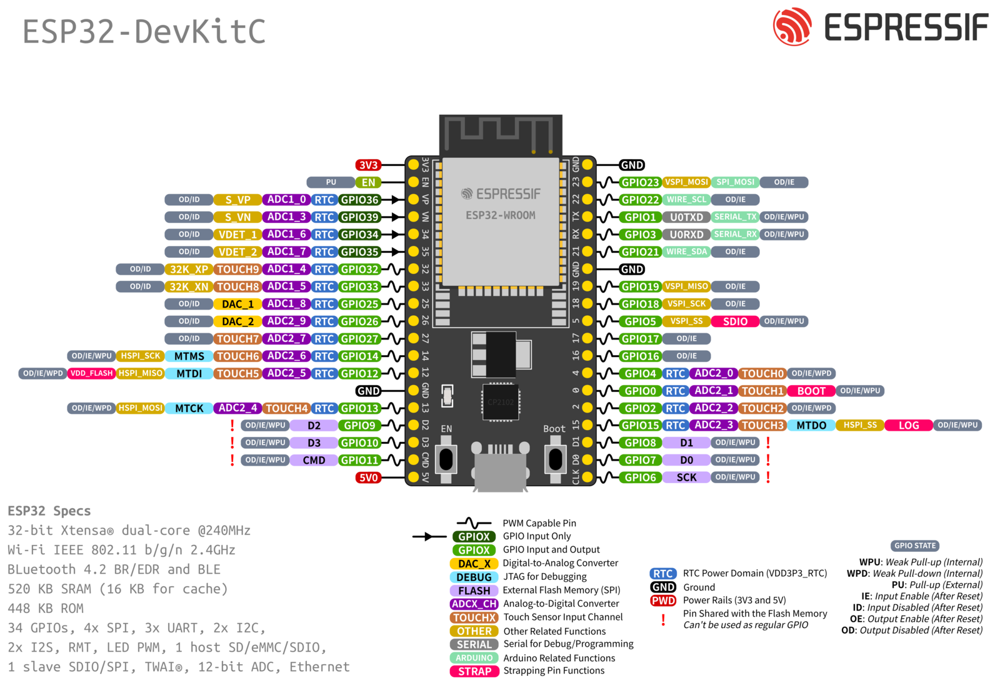

Transmitter Hardware (รีโมท)
ภาพรวม
ส่วนนี้จะอธิบายการสร้าง รีโมทควบคุม (Transmitter) สำหรับหุ่นยนต์ โดยใช้ ESP32 38 Pin ร่วมกับ จอยสติ๊ก (Joystick) เพื่อควบคุมการเลี้ยว ความเร็ว และฟังก์ชันพิเศษต่างๆ
อุปกรณ์ที่ใช้
| อุปกรณ์ | จำนวน | หมายเหตุ |
|---|---|---|
| ESP32 38 Pin | 1 ชิ้น | ใช้เป็นตัวควบคุมหลักของรีโมท |
| จอยสติ๊ก (Joystick Module) | 1 ชิ้น | มี 2 แกน (VRx, VRy) และปุ่มกด (SW) |
| สายจั๊มเปอร์ | ตามต้องการ | สำหรับต่อสายระหว่างอุปกรณ์ |
| Breadboard (ถ้าต้องการ) | 1 ชิ้น | สำหรับทดสอบการต่อสาย |
แผนผังขา (Pinout Reference)
เพื่อให้ง่ายต่อการต่อสาย สามารถดูตำแหน่งขาต่างๆ ได้จากภาพด้านล่าง:


ขั้นตอนการต่อสาย (Wiring)
ใช้ ESP32 38 Pin กับ จอยสติ๊ก ตามตารางนี้:
| ขาจอยสติ๊ก | ต่อเข้ากับ ESP32 ขา... | หน้าที่ในระบบ |
|---|---|---|
| GND | GND | กราวด์ |
| +5V | VIN (หรือ 5V) | ไฟเลี้ยง (เพื่อให้จอยทำงานเต็มช่วง) |
| VRx | GPIO 32 | คุมเลี้ยว (Steer) |
| VRy | GPIO 33 | คุมความเร็ว/เดินหน้า (Speed) |
| SW | GPIO 25 | ปุ่มกด |
หมายเหตุการต่อสาย
- VIN vs 5V: ขา VIN บน ESP32 สามารถรับแรงดันไฟ 5V ได้ และจะป้อนไฟให้กับจอยสติ๊กได้เต็มช่วง (0-4095 ใน ADC)
- GPIO 32 และ 33: เป็นขา ADC (Analog-to-Digital Converter) ที่สามารถอ่านค่าแบบ analog ได้
- GPIO 25: ใช้เป็น digital input พร้อม pull-up resistor ภายใน ไม่ต้องต่อตัวต้านทานเพิ่ม
โค้ดทดสอบ (Transmitter Test)
อัปโหลดโค้ดนี้ลงบอร์ด ESP32 ตัวที่จะทำเป็นรีโมท โค้ดนี้จะยังไม่ส่งสัญญาณหาใคร แต่จะ "แสดงค่า" ออกมาทางหน้าจอคอมให้เราดูก่อนว่าจอยเราปกติไหม
// ขาที่เชื่อมต่อ
const int potSteer = 32; // VRx
const int potSpeed = 33; // VRy
const int swRocket = 25; // SW (ปุ่มยิงจรวด)
void setup() {
Serial.begin(115200);
pinMode(swRocket, INPUT_PULLUP); // ใช้ Pull-up ภายใน ไม่ต้องต่อตัวต้านทานเพิ่ม
Serial.println("Transmitter System Ready...");
}
void loop() {
// อ่านค่าจอยสติ๊ก (0-4095)
int steerValue = analogRead(potSteer);
int speedValue = analogRead(potSpeed);
// อ่านค่าปุ่มยิงจรวด (กด = 0, ไม่กด = 1)
int rocketState = digitalRead(swRocket);
// แสดงผลออก Serial Monitor
Serial.print("Steer: "); Serial.print(steerValue);
Serial.print(" | Speed: "); Serial.print(speedValue);
if (rocketState == LOW) {
Serial.println(" | [!!! ROCKET FIRED !!!]");
} else {
Serial.println(" | Ready");
}
delay(100); // หน่วงเวลาหน่อยจะได้ไม่อ่านไวเกินไป
}
วิธีทดสอบ
- อัปโหลดโค้ด: ใช้ Arduino IDE หรือ PlatformIO อัปโหลดโค้ดลงบอร์ด ESP32
- เปิด Serial Monitor: ตั้ง Baud Rate เป็น 115200
- ทดสอบจอยสติ๊ก:
- เลื่อนจอยไปทางซ้าย-ขวา (VRx) จะเห็นค่า Steer เปลี่ยนแปลง
- เลื่อนจอยไปทางหน้า-หลัง (VRy) จะเห็นค่า Speed เปลี่ยนแปลง
- กดปุ่มบนจอยสติ๊ก จะเห็นข้อความ "[!!! ROCKET FIRED !!!]"
ค่าที่คาดหวัง
- ค่าจอยกลาง (ไม่เลื่อน): ประมาณ 2000-2100
- ค่าจอยสุดซ้าย/ล่าง: ประมาณ 0-100
- ค่าจอยสุดขวา/บน: ประมาณ 4000-4095
การวิเคราะห์เชิงลึก (Technical Deep Dive)
1. หน้าที่ของ Transmitter (Core Responsibilities)
Transmitter ไม่ได้มีหน้าที่แค่ส่งสัญญาณ แต่คือ "ศูนย์กลางการประมวลผลคำสั่ง" ดังนี้:
- Data Acquisition (การรับข้อมูล): อ่านค่า Analog จาก Joystick (ความเร็ว/ทิศทาง) และค่า Digital จากปุ่มยิงจรวด
- Data Processing (การประมวลผล): นำค่าดิบ (Raw Data) มาผ่านการคำนวณ เช่น การจัดการ Dead-zone (เพื่อไม่ให้รถไหลเองตอนจอยอยู่ตรงกลาง) หรือการจำกัดความเร็ว
- User Feedback (การตอบสนองผู้ใช้): แสดงผลผ่านหน้าจอ OLED 0.96" เพื่อบอกสถานะแบตเตอรี่, ความแรงสัญญาณ, หรือสถานะการยิงจรวด
- Communication Management: บริหารจัดการโปรโตคอลการส่งข้อมูลให้มีความหน่วง (Latency) ต่ำที่สุด
2. เทคโนโลยีที่ใช้ (Key Technologies)
เพื่อให้ระบบทำงานได้อย่างมีประสิทธิภาพสูงสุด เราใช้เทคโนโลยีเหล่านี้:
ESP-NOW (Protocol)
- เทคโนโลยีไร้สายความเร็วสูงจาก Espressif ที่ไม่ต้องผ่าน Router
- ข้อดี: เชื่อมต่อได้ไวมาก (หลัก Milliseconds) และกินไฟต่ำ
- ความเร็ว: สามารถส่งข้อมูลได้ถึง 1Mbps
- ระยะทาง: ทำงานได้ไกลถึง 200-300 เมตร (ในพื้นที่โล่ง)
I2C Bus
- สำหรับขับเคลื่อนหน้าจอ OLED 0.96"
- ใช้สายสัญญาณเพียง 2 เส้น (SDA/SCL) ทำให้ประหยัดขา GPIO
- ความเร็วมาตรฐาน: 100kHz (Standard Mode) หรือ 400kHz (Fast Mode)
ADC (Analog to Digital Converter)
- แปลงแรงดันไฟจากจอยสติ๊กเป็นตัวเลข 0-4095 (12-bit resolution)
- ESP32 มี ADC 2 ตัว รองรับได้หลายช่อง
- ความแม่นยำ: ±2% ของค่าเต็มสเกล
Low Bit-rate Modulation
- การจูนคลื่นที่ 1Mbps เพื่อให้สัญญาณ "ถึก" และทะลุทะลวงได้ไกลกว่าปกติ
- แม้จะใช้เสาอากาศแบบลายปริ้น (PCB Antenna) ก็สามารถส่งสัญญาณได้ไกล
3. การแสดงผลบน OLED 0.96" (User Interface)
หน้าจอจะช่วยให้คุณเห็นสถานะการทำงานแบบ Real-time โดยจะแสดงข้อมูลดังนี้:
- Status Bar: ชื่อระบบ (เช่น "MISSION CONTROL") และสถานะการเชื่อมต่อ
- Live Data: แสดงข้อมูลการควบคุมแบบ Real-time
- Spd (Speed): ความเร็วเดินหน้า (+) หรือถอยหลัง (-) (ค่า -255 ถึง 255)
- Str (Steer): การเลี้ยวซ้าย (-) หรือขวา (+) (ค่า -255 ถึง 255)
- Rocket Status: จะมีข้อความแจ้งเตือนสีขาวสว่างขึ้นเมื่อคุณกด "ยิงจรวด"
- Connection Indicator: แสดงสถานะการเชื่อมต่อกับรถ (Connected/Lost)
4. โครงสร้างการทำงานของ Code (Logic Flow)
Code ใน Transmitter จะทำงานเป็น Loop ต่อเนื่องดังนี้:
Start-up (setup):
- Initialize หน้าจอ OLED และระบบ ESP-NOW
- ลงทะเบียน MAC Address ของรถ (ตัวรับ) เพื่อระบุเป้าหมายการส่งข้อมูล
- ตั้งค่า GPIO สำหรับ Joystick และปุ่มกด
The Loop (Continuous Action):
- Step A (Read): อ่านค่าจอยสติ๊กทั้งแกน X, Y และปุ่มยิงจรวด
- Step B (Map): แปลงค่าจากจอย (0-4095) ให้เหลือ -255 ถึง 255 เพื่อให้ตัวรับเข้าใจง่าย
- Step C (Filter): กรอง Dead-zone (-20 ถึง 20) เพื่อป้องกันการไหล
- Step D (Display): อัปเดตหน้าจอ OLED (ทำทุกๆ 50ms เพื่อให้ลื่นไหล)
- Step E (Send): แพ็กข้อมูลใส่ "กล่อง" (Struct) แล้วส่งออกไปทางอากาศผ่าน ESP-NOW
- Step F (Confirm) (Optional): รอรับสัญญาณตอบกลับ (Acknowledgment) ว่ารถได้รับข้อมูลหรือยัง ถ้าไม่ได้รับ ให้แสดง "Connection Lost" บนจอ OLED
[!NOTE] Acknowledgment System: ในโค้ดพื้นฐาน เราจะไม่ใช้ระบบตอบกลับเพื่อลดความซับซ้อน แต่สามารถเพิ่มได้ในภายหลังเพื่อเพิ่มความน่าเชื่อถือ
สถาปัตยกรรมระบบ (System Architecture)
โครงสร้างการทำงาน
PC/Keyboard ──USB──> ESP32 Transmitter (+ Joystick) ──ESP-NOW──> รถ
↓
OLED Display
1. Dual-Input (รับได้สองทาง)
ระบบรีโมทของเรารองรับการควบคุมจาก 2 แหล่ง พร้อมกัน:
- ทางที่ 1 - Keyboard (W,A,S,D): ถ้าคุณอยากนั่งหน้าคอม ดูจอใหญ่ๆ คุณก็กด Keyboard คำสั่งจะวิ่งผ่านสาย USB ไปหา ESP32 Transmitter
- ทางที่ 2 - Joystick: ถ้าคุณอยากได้ฟิลลิ่งนักบิน คุณก็จับ Joystick ที่ต่ออยู่บนตัว ESP32 นั้นโยกได้เลย
- สรุป: ESP32 Transmitter ตัวนี้จะเป็น "ศูนย์รวมคำสั่ง" ไม่ว่าจะมาจากคอมหรือจากจอยในมือมันเอง
2. OLED Display (หน้าปัดอัจฉริยะ)
หน้าจอ OLED บน ESP32 จะทำหน้าที่:
- แสดงว่าตอนนี้ "รับคำสั่งมาจากไหน?" (เช่น แสดงไอคอน Keyboard หรือไอคอน Joystick)
- แสดงสถานะ "ยิงจรวด" ไม่ว่าคุณจะกดจาก Spacebar บนคอม หรือกดจากปุ่มบนจอยสติ๊ก
- แสดงค่า Speed และ Steer แบบ Real-time
3. ความหน่วงต่ำสุดๆ (Ultra-Low Latency)
เพราะไม่ว่าคำสั่งจะมาจากไหน สุดท้ายมันจะถูกส่งออกไปด้วย ESP-NOW ซึ่งเร็วระดับมิลลิวินาที
Logic การทำงานของ Code
flowchart TD
A[Start Loop] --> B{Check Mode Input<br/>Key 1, 2, 3}
B -->|Mode 1| C[Manual Pilot]
B -->|Mode 2| D[Auto AI]
B -->|Mode 3| E[Future Dev]
C --> F{Joystick Active?}
F -->|Yes| G[Use Joystick Data]
F -->|No| H{Keyboard Input?}
H -->|Yes| I[Update Target]
H -->|No| J[Cruise Control]
D --> K[Send Mode 2 Flag<br/>(Robot Decides)]
E --> L[Send Mode 3 Flag]
G --> M[Display & Send]
I --> M
J --> M
K --> M
L --> M
ขั้นตอนการทำงาน (Multi-Mode Logic)
- Mode Selection: ตรวจสอบปุ่ม 1, 2, 3 จากคีย์บอร์ดเพื่อเลือกโหมด
- Mode 1 (Manual): บังคับเอง 100% (ใช้ Logic เดิม: Joystick Override)
- Mode 2 (Auto AI): ปล่อยจอย! ส่งสัญญาณบอกรถว่า "ทำงานเองได้เลย"
- Mode 3 (Future): โหมดสำรองสำหรับฟีเจอร์ในอนาคต
- Control Logic: ทำงานเฉพาะใน Mode 1 เท่านั้น (Mode อื่นจะส่งค่าความเร็วเป็น 0 ไปให้รถจัดการเอง)
- Display: หน้าจอจะเปลี่ยน Header ตามโหมดที่เลือก (MANUAL PILOT / AUTO AI / FUTURE DEV)
ขั้นตอนการทำงาน
- Step 1 (Check USB): "เฮ้ย! มีใครกดปุ่ม W,A,S,D จากคอมมาทางสาย USB ไหม?" ถ้ามี ให้เอาค่านั้นมาตั้งเป็นความเร็ว
- Step 2 (Check Joystick): "แล้วคนขับโยกจอยที่ตัวเครื่องไหม?" ถ้ามีการโยกจอย (ค่าเปลี่ยน) ให้เอาค่าจากจอยมาทับค่าจากคีย์บอร์ด (ให้สิทธิ์คนถือจอยก่อน)
- Step 3 (Dead-zone Filter): กรองค่าที่อยู่ระหว่าง -20 ถึง 20 ให้เป็น 0 เพื่อป้องกันการไหล
- Step 4 (Update Screen): เอาค่าที่สรุปได้ไปโชว์บนจอ OLED
- Step 5 (Send): ยิงข้อมูล ESP-NOW ออกไปหาตัวรถทันที
[!TIP] Priority System: Joystick มีความสำคัญสูงกว่า Keyboard เพราะเป็นการควบคุมแบบ Real-time ที่ต้องการความแม่นยำสูง
การตั้งค่า PlatformIO (Configuration)
หากคุณใช้ PlatformIO ให้สร้างไฟล์ platformio.ini และใช้การตั้งค่าต่อไปนี้ เพื่อให้ระบบจัดการ Library ให้อัตโนมัติ:
[env:esp32dev]
platform = espressif32
board = esp32dev
framework = arduino
monitor_speed = 115200
monitor_filters = time
lib_deps =
adafruit/Adafruit SSD1306 @ ^2.5.7
adafruit/Adafruit GFX Library @ ^1.11.5
โค้ดเต็มรูปแบบ (Full Transmitter Code)
1. การเตรียมตัว (Library ที่ต้องใช้)
ก่อนจะลงโค้ด คุณต้องติดตั้ง Library ใน Arduino IDE ดังนี้:
- Adafruit SSD1306 (สำหรับจอ OLED)
- Adafruit GFX Library (สำหรับวาดภาพ/ตัวอักษร)
2. ผังการต่อสายแบบเต็มรูปแบบ (Full Wiring)
| อุปกรณ์ | ขาอุปกรณ์ | ต่อเข้ากับ ESP32 (38 Pin) |
|---|---|---|
| OLED 0.96" | VCC | 3V3 |
| GND | GND | |
| SCL | GPIO 22 | |
| SDA | GPIO 21 | |
| Joystick | +5V | VIN |
| GND | GND | |
| VRx (Steer) | GPIO 34 | |
| VRy (Speed) | GPIO 35 | |
| Button | Rocket | GPIO 13 |
3. โค้ด Transmitter พร้อม ESP-NOW และ OLED
[!IMPORTANT] คุณต้องเอาเลข MAC Address ของตัวรับ (Receiver) มาใส่ในโค้ดตรง
broadcastAddress
#include <esp_now.h>
#include <WiFi.h>
#include <Wire.h>
#include <Adafruit_GFX.h>
#include <Adafruit_SSD1306.h>
// --- ตั้งค่าจอ OLED ---
#define SCREEN_WIDTH 128
#define SCREEN_HEIGHT 64
Adafruit_SSD1306 display(SCREEN_WIDTH, SCREEN_HEIGHT, &Wire, -1);
// --- ใส่ MAC Address ของตัวรับที่นี่ ---
uint8_t broadcastAddress[] = {0xAA, 0xBB, 0xCC, 0xDD, 0xEE, 0xFF};
// --- โครงสร้างข้อมูลสำหรับส่ง (Struct) ---
typedef struct struct_message {
int speed; // -255 ถึง 255
int steer; // -255 ถึง 255
bool rocket; // true = ยิง
int mode; // 1=Manual, 2=Auto, 3=Future
} struct_message;
struct_message myData; // สร้างตัวแปรส่งข้อมูล
esp_now_peer_info_t peerInfo;
// --- ขาเชื่อมต่อ ---
const int potSteer = 34; // Verified
const int potSpeed = 35; // Verified
const int swRocket = 13; // Verified
// --- ตัวแปรสำหรับ Control Logic ---
int targetSteer = 0;
int targetSpeed = 0;
int currentMode = 1; // เริ่มต้นที่ Mode 1 (Manual)
void setup() {
Serial.begin(115200);
pinMode(swRocket, INPUT_PULLUP);
// FIX: Config ADC ตาม code ที่ test แล้วผ่าน
analogSetPinAttenuation(potSteer, ADC_11db);
analogSetPinAttenuation(potSpeed, ADC_11db);
analogSetWidth(12);
// 1. เริ่มต้นหน้าจอ OLED
if(!display.begin(SSD1306_SWITCHCAPVCC, 0x3C)) {
Serial.println(F("OLED failed"));
for(;;);
}
display.clearDisplay();
display.setTextColor(WHITE);
// 2. เริ่มต้นระบบส่ง WiFi / ESP-NOW
WiFi.mode(WIFI_STA);
if (esp_now_init() != ESP_OK) {
Serial.println("Error initializing ESP-NOW");
return;
}
// 3. ลงทะเบียนตัวรับ (Peer)
memcpy(peerInfo.peer_addr, broadcastAddress, 6);
peerInfo.channel = 0;
peerInfo.encrypt = false;
if (esp_now_add_peer(&peerInfo) != ESP_OK){
Serial.println("Failed to add peer");
return;
}
}
// --- ตัวแปรสำหรับคุมเวลาหน้าจอ ---
unsigned long lastDisplayTime = 0;
const int displayInterval = 150;
// --- ตัวแปรสำหรับ Mode Selection ---
bool selectingMode = false;
int tempSelectedMode = 1;
bool lastBtnState = HIGH;
unsigned long lastDebounceTime = 0;
const int debounceDelay = 50;
void updateDisplay();
void loop() {
// --- 1. อ่านค่า Input ---
int rawSteer = analogRead(potSteer);
int rawSpeed = analogRead(potSpeed);
int joySteer = map(rawSteer, 0, 4095, -255, 255);
int joySpeed = map(rawSpeed, 0, 4095, 255, -255);
// Deadzone 40 (Sensitivity Adjustment)
bool joyActive = (abs(joySpeed) > 40 || abs(joySteer) > 40);
// --- 2. จัดการปุ่มกด (Mode Selection) ---
int reading = digitalRead(swRocket); // GPIO 13
if (reading != lastBtnState) {
lastDebounceTime = millis();
}
if ((millis() - lastDebounceTime) > debounceDelay) {
// ถ้าสถานะปุ่มเปลี่ยนจริง (Pressed = LOW)
if (reading == LOW && !selectingMode) {
// เข้าสู่โหมดเลือก
selectingMode = true;
tempSelectedMode = currentMode;
// รอให้ปุ่มถูกปล่อยก่อน (กัน Double Trigger)
while(digitalRead(swRocket) == LOW) delay(10);
}
else if (reading == LOW && selectingMode) {
// ยืนยันการเลือก (Confirm)
currentMode = tempSelectedMode;
selectingMode = false;
while(digitalRead(swRocket) == LOW) delay(10);
}
}
lastBtnState = reading;
// --- 3. Logic ในแต่ละสถานะ ---
if (selectingMode) {
// ใช้ Joystick แกน Y (Speed) ในการเลือกโหมด
if (joySpeed > 100) tempSelectedMode = 1; // ดันขึ้น -> Manual (1)
else if (abs(joySpeed) < 50) { /* กลางๆ */ }
else if (joySpeed < -100 && joySpeed > -200) tempSelectedMode = 2; // ดันลง -> Auto (2)
else if (joySpeed < -200) tempSelectedMode = 3; // ดันลงสุด -> Future (3)
// หยุดรถขณะเลือกโหมด
targetSpeed = 0;
targetSteer = 0;
myData.rocket = false; // ห้ามยิง
}
else {
// โหมดปกติ (Running)
// Serial Command Handling (โหมด PC คุม)
// ระบบป้องกัน: ถ้าขยับจอย (joyActive) จะไม่รับคำสั่งจาก PC
if (Serial.available() > 0 && !joyActive) {
char key = Serial.read();
// Mode Selection: q=Manual, w=AI, e=Dev1, r=Dev2
if(key == 'q') currentMode = 1;
else if(key == 'w') currentMode = 2;
else if(key == 'e') currentMode = 3;
else if(key == 'r') currentMode = 4;
if (currentMode == 1) {
// Movement: s=Drive, x=Back, a=Left, d=Right, z=Stop
if(key == 's') targetSpeed = 200;
else if(key == 'x') targetSpeed = -200;
else if(key == 'a') targetSteer = -150;
else if(key == 'd') targetSteer = 150;
else if(key == 'z' || key == ' ') { targetSpeed = 0; targetSteer = 0; }
// Key 'f' for Fire (optional/extra)
if(key == 'f') myData.rocket = true;
}
}
// ถ้าไม่ขยับจอย และไม่ได้สั่งจาก PC ให้หยุดรถ (เมื่ออยู่ในโหมด Manual)
if (!joyActive && !Serial.available() && currentMode == 1) {
// targetSpeed = 0; // ลบออกเพื่อให้คำสั่งจาก PC คงอยู่จนกว่าจะสั่งหยุด
}
if (currentMode == 1) {
if (joyActive) {
targetSpeed = joySpeed;
targetSteer = joySteer;
}
}
// ปุ่มยิง Rocket ต้องกดค้างไว้ (Momentary) ในโหมดปกติ *ถ้าไม่ใช่ปุ่ม Mode*
// *แต่ตอนนี้ GPIO 13 เป็นปุ่ม Mode ไปแล้ว* ดังนั้น Rocket ต้องย้ายไปปุ่มอื่น หรือใช้ Spacebar แทน
// myData.rocket = ... (Disable Hardware Button for Rocket temporarily)
}
// --- 4. ส่งข้อมูล ---
myData.mode = currentMode;
myData.speed = (abs(targetSpeed) < 20) ? 0 : targetSpeed;
myData.steer = (abs(targetSteer) < 20) ? 0 : targetSteer;
// Rocket จาก Spacebar (ถ้ามี logic จาก Serial) หรือ set false ไปก่อน
// myData.rocket is handled by Serial logic if added.
// --- 4. การส่งข้อมูล (ส่งทุก Loop เพื่อความ Real-time) ---
esp_now_send(broadcastAddress, (uint8_t *) &myData, sizeof(myData));
// ส่งข้อมูลเข้า Serial Monitor เพื่อให้ Python รับไปใช้ต่อ (JSON Format)
Serial.printf("{\"mode\":%d, \"speed\":%d, \"steer\":%d, \"rocket\":%d, \"joy\":%d}\n",
myData.mode, myData.speed, myData.steer, myData.rocket, joyActive ? 1 : 0);
// เคลียร์สถานะยิงหลังจากส่งแล้ว (ป้องกันการยิงค้าง)
myData.rocket = false;
// --- 5. อัปเดตจอ ---
if (millis() - lastDisplayTime >= displayInterval) {
updateDisplay();
lastDisplayTime = millis();
}
}
void updateDisplay() {
display.clearDisplay();
if (selectingMode) {
// UI หน้าเลือกโหมด
display.setTextSize(2);
display.setCursor(10, 10);
display.println("SELECT MODE");
display.setTextSize(2);
display.setCursor(50, 40);
display.print("<"); display.print(tempSelectedMode); display.print(">");
}
else {
// UI หน้าปกติ
display.setTextSize(1);
display.setCursor(0,0);
String modeName = "MANUAL";
if (currentMode == 2) modeName = "AUTO AI";
else if (currentMode == 3) modeName = "DEV 1";
else if (currentMode == 4) modeName = "DEV 2";
display.printf("MODE: %s", modeName.c_str());
display.drawLine(0, 10, 128, 10, WHITE);
display.setCursor(0, 20);
display.printf("Spd: %d | Str: %d", myData.speed, myData.steer);
if(myData.rocket) {
display.setCursor(40, 45);
display.setTextSize(2);
display.print("FIRE!!");
}
}
display.display();
}
การทำงานของโค้ดนี้
- Setup: เปิดหน้าจอ OLED และจูน ESP32 ให้พร้อมคุยกับรถตาม MAC Address ที่คุณระบุ
- Loop - Step 1: อ่านค่าจอยสติ๊ก แล้วใช้คำสั่ง
mapแปลงจากเลขเยอะๆ (0-4095) ให้เหลือตัวเลขที่เราเข้าใจง่าย (-255 ถึง 255) - Loop - Step 2: คอยดักฟังสาย USB (Serial) ว่ามีใครกด Keyboard มาไหม ถ้ามีจะเอาค่านั้นมาใช้งาน
- Loop - Step 3: ส่ง "กล่องข้อมูล" (Struct) ออกไปในอากาศผ่าน ESP-NOW
- Loop - Step 4: อัปเดตหน้าจอ OLED ให้คุณเห็นค่าความเร็วและสถานะยิงจรวดแบบ Real-time
ฟีเจอร์พิเศษ
- Dead-zone Handling: ป้องกันการไหลของรถเมื่อจอยสติ๊กอยู่ตรงกลาง (ค่าระหว่าง -20 ถึง 20 จะถูกตั้งเป็น 0)
- Keyboard Control: สามารถควบคุมผ่าน Serial Monitor ได้ด้วยการกดปุ่ม
w(เดินหน้า),s(ถอยหลัง),spacebar(ยิงจรวด) - Real-time Display: แสดงสถานะการทำงานบนจอ OLED แบบ Real-time
- High Frequency: ส่งข้อมูล 20 ครั้งต่อวินาที (50ms delay) เพื่อการควบคุมที่ลื่นไหล
คู่มือการใช้งาน (User Manual)
เนื่องจากรีโมทเรารองรับการสั่งงานผ่านคอมพิวเตอร์ (Serial Monitor) นี่คือปุ่มที่คุณใช้สั่งงานได้:
1. การเปลี่ยนโหมด (Mode Switching)
พิมพ์ตัวเลขลงในช่อง Serial Monitor แล้วกด Send (หรือ Enter):
| คีย์ | โหมด | คำอธิบาย |
|---|---|---|
| 1 | MANUAL PILOT | บังคับเอง 100% (ใช้จอย หรือ WASD) |
| 2 | AUTO AI | ปล่อยให้หุ่นยนต์วิ่งเองตามโปรแกรม |
| 3 | FUTURE DEV | โหมดสำรองสำหรับอนาคต |
2. การบังคับทิศทาง (Keyboard Control)
(ใช้งานได้เฉพาะในโหมด 1 Manual)
| คีย์ | การกระทำ |
|---|---|
| w | เดินหน้า (Cruise Control) |
| s | ถอยหลัง |
| a | เลี้ยวซ้ายค้าง |
| d | เลี้ยวขวาค้าง |
| x | เบรก / หยุดทุกอย่าง |
| Space | ยิงจรวด (Fire Rocket) |
[!TIP] Joystick Override: ถ้าคุณขยับจอยสติ๊ก ระบบจะตัดการทำงานของ Keyboard ทันทีและเชื่อจอยสติ๊กเป็นหลัก
ขั้นตอนการติดตั้งและทดสอบ
- ติดตั้ง Library:
- Arduino IDE: ติดตั้งผ่าน Library Manager
- PlatformIO: ค่า
lib_depsในplatformio.iniจะจัดการให้เองเมื่อกด Build - เตรียมโค้ด:
- Arduino IDE: ก๊อปปี้โค้ดลงไฟล์
.ino - PlatformIO: ก๊อปปี้โค้ดลงไปที่
src/main.cpp - ต่อสาย: ต่อสายตามตารางด้านบน
- แก้ MAC Address: หา MAC Address ของตัวรับแล้วใส่ในโค้ดตรง
broadcastAddress - Upload: เชื่อมต่อสาย USB แล้วอัปโหลดโค้ด
- Arduino IDE: กดปุ่ม Upload (ลูกศรขวา)
- PlatformIO: กดปุ่ม Upload (ลูกศรขวาที่ Status Bar) หรือสั่ง
pio run -t upload -
[!CAUTION] > สำหรับผู้ใช้ PlatformIO: ห้ามกดปุ่ม Test (รูปขวดทดลอง) เพราะนั่นสำหรับ Unit Test ไม่ใช่การอัปโหลดโค้ดปกติ
- ทดสอบ: ถ้าหน้าจอ OLED ขึ้นคำว่า "MISSION CONTROL" แสดงว่ารีโมทคุณพร้อมรบแล้ว!
แหล่งข้อมูลเพิ่มเติม
หมายเหตุ แก้ปัญหา esp32 ไม่นิ่ง
เหตุผลที่ ESP32 + Joystick มักจะไม่นิ่ง (สัญญาณแกว่ง) เป็นเพราะ ADC (Analog to Digital Converter) ของ ESP32 มีสัญญาณรบกวน (Noise) สูงมาก และมีความไม่เป็นเชิงเส้น (Non-linear) โดยเฉพาะเมื่อเปิดใช้งาน Wi-Fi หรือบลูทูธไปพร้อมกัน
1. src/main.cpp
#include <Arduino.h>
// --- Configuration ---
const int pinX = A0;
const int pinY = A1;
const int pinSW = 2;
// ปรับค่าเหล่านี้ตามความเหมาะสมของ Joystick แต่ละตัว
const int deadzone = 15;
const int samples = 64; // เพิ่มเป็น 64 เพื่อความนิ่งระดับวิศวกรรม
const int centerOffset = 512; // ค่ากลางทางทฤษฎี
void setup() {
// ใช้ Baud rate สูงเพื่อลด Latency
Serial.begin(115200);
// ตั้งค่าขา Input
pinMode(pinSW, INPUT_PULLUP);
// หน่วงเวลาให้ระบบเสถียรตอนเริ่มต้น
delay(500);
Serial.println("--- Joystick Phase 1: Clean Data Initiated ---");
}
void loop() {
// 1. อ่านค่าแบบ Oversampling (Hardware filtering)
long rawX = 0;
long rawY = 0;
for(int i = 0; i < samples; i++) {
rawX += analogRead(pinX);
rawY += analogRead(pinY);
}
// หาค่าเฉลี่ย
int avgX = rawX / samples;
int avgY = rawY / samples;
// 2. Linear Mapping
// แปลง 0-1023 เป็น -255 ถึง 255
int mapX = map(avgX, 0, 1023, -255, 255);
int mapY = map(avgY, 0, 1023, -255, 255);
// 3. Precision Deadzone Logic
// หากค่าอยู่ในช่วงใกล้ศูนย์ ให้เป็นศูนย์จริงๆ เพื่อกันหุ่นยนต์สั่น (Jitter)
if (abs(mapX) < deadzone) mapX = 0;
if (abs(mapY) < deadzone) mapY = 0;
// 4. Digital Input Processing
// อ่านสถานะปุ่ม (กดเป็น LOW เนื่องจากใช้ Pull-up)
// กลับค่า (Invert) ให้ กด=1 ปล่อย=0 เพื่อให้เข้าใจง่ายในฝั่งรับ
int swState = !digitalRead(pinSW);
// 5. Serial Output (Formatted for Serial Plotter)
// การใช้ Format "Label:Value" ช่วยให้ดูใน Serial Plotter ได้ง่ายมาก
Serial.print("X_Axis:"); Serial.print(mapX);
Serial.print(",");
Serial.print("Y_Axis:"); Serial.print(mapY);
Serial.print(",");
Serial.print("Button:"); Serial.println(swState);
// 6. Loop Timing
// ปรับเป็น 20ms (50Hz) ซึ่งเป็นความเร็วมาตรฐานของงาน Robotics/Servo
delay(20);
}
2. สิ่งที่คุณจะเห็นใน Serial Plotter
หากคุณกด Ctrl+Shift+P แล้วเลือก PlatformIO: Serial Plotter หรือเปิด Monitor:
- เส้นกราฟจะนิ่งเป็นเส้นตรงที่เลข 0 เมื่อคุณปล่อยมือ
- ไม่มีสัญญาณ Noise (หยักๆ) เพราะเราทำ Oversampling 64 ครั้ง
- ความละเอียดจะสม่ำเสมอ ตั้งแต่ -255 ถึง 255 (ไม่มีอาการ "แช่" หรือ "โค้ง" ที่ปลายทางเหมือน ESP32)
3. คำแนะนำเพิ่มเติมในเชิงวิศวกรรม
- Power Stability: Joystick ใช้ความต้านทานภายใน หากแรงดัน 5V จาก Nano ไม่นิ่ง ค่าจะสวิง แนะนำให้ต่อ Capacitor 0.1uF คร่อมขา VCC และ GND ของ Joystick ครับ
- Next Step: เมื่อค่าเหล่านี้นิ่งแล้ว เราจะทำการ "แพ็ก" ข้อมูลเหล่านี้เป็น Struct หรือ Json เพื่อส่งต่อให้ ESP32 ผ่านทาง Serial ในเฟสที่ 2 ครับ
เกิด Error นี้ขึ้นเพราะในไฟล์ main.cpp ของคุณมีการประกาศตัวแปรและฟังก์ชัน setup() ซ้ำซ้อนกัน (Redefinition) จากโค้ดที่ผมแนะนำไปก่อนหน้า และอีกจุดที่สำคัญคือ **Arduino Nano (ATmega328P) ไม่มี Serial1** ครับ (มันมี Hardware Serial แค่ชุดเดียว)
ในฐานะวิศวกรคอมพิวเตอร์ เราต้องจัดการ "Namespace" และ "Hardware Limitation" ให้ถูกต้อง ผมได้รวมโค้ดที่แก้ไขแล้วให้เป็นไฟล์เดียว (Clean Code) เพื่อใช้สำหรับ ส่งข้อมูลจาก Nano ไป ESP32 ดังนี้ครับ:
แก้ไขไฟล์ src/main.cpp
#include <Arduino.h>
// --- 1. Data Structure ---
// ใช้ struct เพื่อแพ็กข้อมูลให้เป็นระเบียบ
struct Payload {
int8_t x; // ใช้ int8_t เพื่อเก็บค่า -100 ถึง 100 (ใช้พื้นที่แค่ 1 byte)
int8_t y;
uint8_t btn; // เก็บสถานะปุ่ม 0 หรือ 1
};
Payload joystickData;
// --- 2. Pin Configuration ---
const uint8_t pinX = A0;
const uint8_t pinY = A1;
const uint8_t pinSW = 2;
// --- 3. Parameters ---
const int deadzone = 15;
const int samples = 64;
void setup() {
// Nano มี Serial เดียว ซึ่งใช้ทั้งส่งข้อมูลข้ามบอร์ดและ Debug ลงคอม
// เราจะใช้ความเร็ว 115200 เป็นมาตรฐาน
Serial.begin(115200);
pinMode(pinSW, INPUT_PULLUP);
// หน่วงเวลารอระบบไฟฟ้าเสถียร
delay(500);
}
void loop() {
// --- 4. Data Processing (จาก Phase 1) ---
long rawX = 0, rawY = 0;
for(int i = 0; i < samples; i++) {
rawX += analogRead(pinX);
rawY += analogRead(pinY);
}
int avgX = rawX / samples;
int avgY = rawY / samples;
// Map เป็น -100 ถึง 100 เพื่อความง่ายและประหยัดพื้นที่ส่งข้อมูล
int mapX = map(avgX, 0, 1023, -100, 100);
int mapY = map(avgY, 0, 1023, -100, 100);
if (abs(mapX) < deadzone) mapX = 0;
if (abs(mapY) < deadzone) mapY = 0;
// เตรียมข้อมูลลงใน Struct
joystickData.x = (int8_t)mapX;
joystickData.y = (int8_t)mapY;
joystickData.btn = !digitalRead(pinSW); // กด=1, ปล่อย=0
// --- 5. Transmission (Phase 2) ---
// ส่งแบบ Binary เพื่อความเร็วสูงสุดและไม่มีการโค้งของสัญญาณ
// เราจะส่ง Header 0xAA เพื่อให้ฝั่งรับ (ESP32) รู้ว่าเป็นจุดเริ่มต้น
Serial.write(0xAA);
Serial.write((uint8_t*)&joystickData, sizeof(joystickData));
// ส่ง Debug ออกไปดูในคอมด้วย (ทางเทคนิคจะปนไปกับ Binary แต่ Serial Monitor ยังพออ่านออก)
// หรือจะคอมเมนต์ออกถ้าจะเชื่อมต่อกับ ESP32 จริงๆ
Serial.print(" X:"); Serial.print(joystickData.x);
Serial.print(" Y:"); Serial.print(joystickData.y);
Serial.print(" B:"); Serial.println(joystickData.btn);
delay(20); // 50Hz Update rate
}
สาเหตุของ Error ที่คุณเจอ:
- Conflicting Declaration / Redefinition: คุณมี
const int pinSWและvoid setup()สองที่ในไฟล์เดียวกัน วิธีแก้คือลบของเก่าออกให้หมดแล้วใช้โค้ดชุดใหม่ที่ผมรวมให้ด้านบนครับ - Serial1 was not declared: ชิป ATmega328P บน Nano มี Serial พอร์ตเดียวคือ
Serial(ขา D0/RX, D1/TX) ต่างจาก ESP32 หรือ Leonardo ที่มี Serial หลายชุด
คำแนะนำเพิ่มเติมสำหรับการต่อสาย:
เนื่องจากเราใช้ Serial (ขา 0 และ 1) ในการส่งข้อมูลไปหา ESP32:
- ตอน Upload Code: ต้องถอดสายที่ต่อกับขา TX/RX ออกก่อน ไม่อย่างนั้นจะ Upload ไม่เข้า
- Logic Level: ขา TX ของ Nano จ่าย 5V อย่าลืมใช้ Voltage Divider (R 1k และ 2k) หรือ Level Shifter คั่นก่อนเข้าขา RX ของ ESP32 เพื่อความปลอดภัยครับ
ลองแก้ไฟล์ main.cpp ตามนี้แล้วกด Run อีกครั้งครับ ถ้าผ่านแล้วเราจะไปลุยโค้ดฝั่ง ESP32 เพื่อรับข้อมูลนี้กัน!
ไปกันต่อครับ! เมื่อฝั่ง Arduino Nano (Transmitter) พร้อมส่งข้อมูลแบบ Binary แล้ว ตอนนี้เรามาทำ เฟสที่ 2.2: ฝั่งรับ (ESP32 Receiver) กัน
ในฝั่ง ESP32 เราจะใช้ Hardware Serial 2 (UART2) เพื่อรับข้อมูลจาก Nano วิธีนี้จะทำให้เราแยกพอร์ต USB (เอาไว้เขียนโปรแกรม/Debug) ออกจากพอร์ตที่ใช้รับข้อมูลจากจอยสติ๊กได้เด็ดขาด
1. การต่อสาย Hardware (Crucial Step!)
เนื่องจากแรงดัน (Logic Level) ของ Nano คือ 5V และ ESP32 คือ 3.3V คุณต้องลดแรงดันสัญญาณก่อนเข้า ESP32 มิฉะนั้นชิปอาจพังได้
- Nano TX (Pin 1) -> ผ่านตัวต้านทานแบ่งแรงดัน (Voltage Divider) -> ESP32 RX2 (GPIO 16)
- Nano GND -> ESP32 GND (ต้องเชื่อมกัน)
2. โค้ดฝั่ง ESP32 (Receiver)
สร้างโปรเจกต์ใหม่ใน PlatformIO สำหรับ ESP32 และใช้โค้ดนี้ใน main.cpp:
#include <Arduino.h>
#include <WiFi.h>
#include <esp_now.h>
// 1. โครงสร้างข้อมูล (ต้องตรงกันทั้ง 3 บอร์ด)
struct Payload {
int8_t x;
int8_t y;
uint8_t btn;
};
Payload data;
// 2. ใส่ MAC Address ของ ESP32 "ตัวรับ" (ที่หุ่นยนต์)
// ถ้ายังไม่มี ให้ใส่เลขหลอกไว้ก่อนเพื่อคอมไพล์
uint8_t receiverAddress[] = {0xFF, 0xFF, 0xFF, 0xFF, 0xFF, 0xFF};
void setup() {
Serial.begin(115200);
WiFi.mode(WIFI_STA);
// แสดง MAC ของตัวเอง (Transmitter)
Serial.print("Transmitter MAC: ");
Serial.println(WiFi.macAddress());
// เริ่มต้น Serial2 รับจาก Nano
Serial2.begin(115200, SERIAL_8N1, 16, 17);
// เริ่มต้น ESP-NOW
if (esp_now_init() != ESP_OK) {
Serial.println("Error initializing ESP-NOW");
return;
}
}
void loop() {
if (Serial2.available() > 0) {
// ดักฟัง Header 0xAA เพื่อความแม่นยำ
if (Serial2.read() == 0xAA) {
Serial2.readBytes((uint8_t*)&data, sizeof(data));
// แสดงผล Debug ออกจอคอม (สะอาดแล้ว)
Serial.printf("JOYSTICK -> X:%d Y:%d BTN:%d\n", data.x, data.y, data.btn);
// ส่งข้อมูลออกอากาศไปยังหุ่นยนต์
esp_now_send(receiverAddress, (uint8_t *) &data, sizeof(data));
}
}
}
3. ไฟล์ platformio.ini สำหรับ ESP32
ตรวจสอบให้มั่นใจว่าตั้งค่าบอร์ดถูกต้อง (ตัวอย่างนี้ใช้รุ่นยอดนิยม):
[env:esp32dev]
platform = espressif32
board = esp32dev
framework = arduino
monitor_speed = 115200
ทำไมวิธีนี้ถึงแก้ปัญหา "ความโค้ง" ได้ถาวร?
- Linearity: เราใช้ ADC ของ Nano ที่มีความแม่นยำสูงอ่านค่าตั้งแต่ต้นทาง
- Zero Offset: เราทำ Calibration และ Deadzone บน Nano เรียบร้อยแล้ว ข้อมูลที่ส่งมายัง ESP32 จึงเป็น "Digital Command" ที่สะอาด 100%
- No Lag: การส่งแบบ Binary ที่ 115200 bps มี Latency ต่ำมาก (น้อยกว่า 1ms) จนคุณไม่รู้สึกถึงความหน่วง
ขั้นตอนต่อไป
เมื่อคุณต่อสายและอัปโหลดโค้ดทั้งสองฝั่งแล้ว ลองเปิด Serial Monitor ของ ESP32 ดูครับ ถ้าเห็นตัวเลขขยับตามจอยสติ๊กอย่างลื่นไหล แสดงว่าคุณชนะปัญหา ADC ของ ESP32 แล้ว!
คุณอยากให้ผมช่วยต่อยอดเรื่องการใช้ "ESP-NOW" เพื่อส่งข้อมูลนี้ไร้สายไปยังหุ่นยนต์ตัวอื่น หรือต้องการเขียน Logic ควบคุมหุ่นยนต์จากค่า X, Y ที่ได้รับมานี้เลยครับ?
ทำไมถึงควรใช้ Logic Level Converter?
- Bi-directional: สามารถส่งสัญญาณกลับไปกลับมาได้ (ถ้าวันหลังคุณต้องการให้ ESP32 ส่งข้อมูลกลับมาที่ Nano เพื่อแสดงผลบนจอ LCD ที่รีโมท)
- Sharp Signals: ช่วยรักษาขอบของสัญญาณดิจิทัล (Signal Edges) ให้คมชัด ทำให้ Error ในการสื่อสารที่ Baud rate สูงๆ (115200+) น้อยลง
- Safety: แยกแรงดัน 5V และ 3.3V ออกจากกันอย่างเด็ดขาด ป้องกันความเสียหายต่อขา I/O ของ ESP32
วิธีการต่อสาย (Wiring with LLC)
โมดูล Logic Level Converter ส่วนใหญ่จะมี 2 ฝั่งคือ High Side (HV) สำหรับ 5V และ Low Side (LV) สำหรับ 3.3V
| ขาของ LLC | เชื่อมต่อกับ | หมายเหตุ |
|---|---|---|
| HV | Nano 5V | แหล่งจ่ายไฟฝั่งสูง |
| GND (ฝั่ง HV) | Nano GND | กราวด์ร่วม |
| LV | ESP32 3V3 | แหล่งจ่ายไฟฝั่งต่ำ |
| GND (ฝั่ง LV) | ESP32 GND | กราวด์ร่วม |
| HV1 | Nano TX (D1) | สัญญาณส่งจาก Nano |
| LV1 | ESP32 RX2 (16) | สัญญาณรับเข้า ESP32 |
ข้อควรระวังเพิ่มเติม
- Common Ground: ตรวจสอบให้แน่ใจว่า GND ของทั้ง Nano, ESP32 และ LLC เชื่อมถึงกันหมด (สำคัญมากสำหรับการสื่อสารแบบ Serial)
- HV/LV Supply: ต้องจ่ายไฟเลี้ยงให้โมดูล LLC ทั้งสองฝั่ง (HV ต้องได้ 5V, LV ต้องได้ 3.3V) ไม่เช่นนั้นสัญญาณจะไม่ข้ามฝั่งครับ
สรุปความพร้อม
ตอนนี้คุณมี:
- Nano: อ่านค่าจอยสติ๊กได้นิ่งและสะอาด (Phase 1 Done)
- LLC: พร้อมเชื่อมต่อสัญญาณอย่างปลอดภัย
- ESP32: พร้อมรับข้อมูลผ่าน Serial2
เมื่อคุณต่อสายเสร็จแล้ว ลองอัปโหลดโค้ดฝั่ง ESP32 ที่ให้ไปก่อนหน้าดูครับ ถ้าค่าที่ Print ออกมาใน Serial Monitor ของ ESP32 ตรงกับจอยสติ๊กที่คุณขยับ เราก็พร้อมจะไปต่อใน เฟสที่ 3: การส่งสัญญาณไร้สาย (ESP-NOW) เพื่อควบคุมหุ่นยนต์จริงๆ แล้วครับ
คุณอยากให้ผมเตรียมโค้ด ESP-NOW สำหรับตัว Transmitter เลยไหมครับ?
สรุปภาพรวมโปรเจ็กต์: Smart Wireless Remote Control (3-Stage Link)
ปัจจุบันโปรเจ็กต์ของคุณแบ่งออกเป็น 2 ส่วนหลัก คือ ภาคส่ง (รีโมท) และ ภาครับ (หุ่นยนต์) โดยมีลำดับการทำงานดังนี้ครับ:
1. ภาคส่ง (Transmitter Side)
ประกอบด้วยบอร์ด 2 ตัว ทำงานประสานกัน:
- Arduino Nano: ทำหน้าที่เป็น Interface รับค่า Analog จาก Joystick (X, Y) และปุ่มกด (Switch) มาทำความสะอาดข้อมูล (Mapping/Deadzone) แล้วแพ็กข้อมูลเป็นชุด (Struct) ส่งออกทาง Serial (5V)
- ESP32 (Transmitter): รับข้อมูลจาก Nano ผ่าน Logic Level Converter (LLC) เพื่อแปลงสัญญาณจาก 5V เป็น 3.3V จากนั้นทำหน้าที่เป็น "วิทยุ" ยิงข้อมูลออกอากาศด้วยโปรโตคอล ESP-NOW ซึ่งมีความหน่วง (Latency) ต่ำมาก
2. ภาครับ (Receiver Side)
ประกอบด้วยบอร์ด 2 ตัวเช่นกันเพื่อประสิทธิภาพสูงสุด:
- ESP32 (Receiver): สแตนด์บายรอรับสัญญาณจากอากาศ เมื่อได้รับข้อมูลจะส่งต่อผ่าน Serial (3.3V) ไปยังบอร์ดประมวลผลหลัก
- Arduino Mega: รับข้อมูลจาก ESP32 ผ่าน LLC (3.3V เป็น 5V) เพื่อนำค่า X, Y ไปคำนวณควบคุมมอเตอร์หรืออุปกรณ์จำนวนมาก เนื่องจาก Mega มีพอร์ต I/O และ Timer ที่เหมาะแก่การคุม Hardware หนักๆ
สถานะความสำเร็จในปัจจุบัน (Current Progress)
- Hardware Setup: คุณจัดการเรื่องการจ่ายไฟ (Power Distribution) ได้อย่างถูกต้อง โดยใช้การขนานไฟ 5V เข้าขา 5V ของ Nano และ VIN ของ ESP32
- Signal Link: เราทดสอบแล้วว่า Nano ส่งข้อมูลมาถึง ESP32 ตัวส่งได้สำเร็จ (ค่า X: 100, Y: 100 ที่คุณเห็นล่าสุด)
- Data Integrity: เราตัดสินใจใช้ Binary Struct และ Header 0xAA เพื่อให้ข้อมูลมีความแม่นยำและไม่เกิดการเหลื่อมกันของลำดับตัวเลข
สิ่งที่เรากำลังจะทำเป็นขั้นตอนต่อไป
- จับคู่ (Pairing): นำ MAC Address ของ ESP32 ตัวที่ 3 (ฝั่งหุ่นยนต์) มาใส่ในโค้ดตัวส่ง เพื่อให้ "รีโมท" รู้ว่าจะต้องยิงสัญญาณไปที่ "หุ่นยนต์" ตัวไหน
- Logic Control: เขียนโค้ดใน Arduino Mega เพื่อเปลี่ยนค่า X, Y จากจอยสติ๊ก ให้กลายเป็นความเร็วมอเตอร์ (เช่น การทำ Differential Drive สำหรับหุ่นยนต์ 2 ล้อ หรือ 4 ล้อ)
ขั้นตอนต่อไปคือการเอาเลข MAC Address ของตัวรับมาใส่ในโค้ด เพื่อเริ่มทดสอบ "การควบคุมไร้สายจริง" ได้เลยครับ!
การทราบ MAC Address ของ ESP32 นั้นทำได้ง่ายมากครับ โดยใช้โค้ดเพียงไม่กี่บรรทัดเพื่อสั่งให้ชิปอ่านค่า "ที่อยู่ทางกายภาพ" (Physical Address) ของตัวมันเองออกมาแสดงผลบนหน้าจอคอมพิวเตอร์ครับ
วิธีการหา MAC Address (สำหรับ ESP32 ตัวรับ)
เชื่อมต่อบอร์ด : นำ ESP32 ตัวที่คุณจะใช้เป็น ตัวรับ (ที่หุ่นยนต์) มาเสียบสาย USB เข้ากับคอมพิวเตอร์ครับ
อัปโหลดโค้ด : ใช้โค้ดด้านล่างนี้อัปโหลดลงไปในบอร์ด
platformio.ini
[env:esp32dev]
platform = espressif32
board = esp32dev
framework = arduino
monitor_speed = 115200
; หากอัปโหลดไม่เข้า ให้ลองลดความเร็วการอัปโหลดลง
upload_speed = 115200
main.cpp
#include <Arduino.h>
#include <WiFi.h>
void setup() {
// รอกระบวนการ Serial เริ่มต้นเล็กน้อย
Serial.begin(115200);
delay(1000);
WiFi.mode(WIFI_STA);
Serial.println("\n==============================");
Serial.print("MY MAC ADDRESS: ");
Serial.println(WiFi.macAddress());
Serial.println("==============================");
}
void loop() {
// พิมพ์ซ้ำทุก 5 วินาทีกันเหนื่อยครับ
Serial.print("Still alive... My MAC is: ");
Serial.println(WiFi.macAddress());
delay(5000);
}
การจัดลำดับชั้น (Hierarchy) ที่ดีที่สุดควรเรียงตาม "ความเร็ว" และ "หน้าที่" ดังนี้ครับ:
การเรียงลำดับสมอง (System Architecture)
1. ESP32: "ฝ่ายสื่อสารและประตูหน้า" (The Gateway)
- หน้าที่: รับสัญญาณไร้สายจาก Transmitter ผ่าน ESP-NOW (ซึ่งเร็วมาก)
- การจัดการ: ถอดรหัสคำสั่ง (Parsing) จากสัญญาณวิทยุให้กลายเป็นคำสั่งที่เข้าใจง่าย
- การเชื่อมต่อ: ส่งต่อคำสั่งไปให้ STM32 ผ่านทาง UART (Serial) หรือ SPI
2. STM32: "สมองหลักและผู้ควบคุมนโยบาย" (The Processor/Master)
- หน้าที่: รับคำสั่งจาก ESP32 มาคำนวณโลจิกหลัก เช่น ถ้ากดปุ่มเดินหน้า ต้องคำนวณวิถี (Trajectory) หรือจัดการระบบความปลอดภัย (Safety Check)
- การจัดการ: รันระบบ RTOS เพื่อแบ่งเวลาไปดูทั้ง ESP32 และสั่งงาน Arduino Mega พร้อมๆ กัน
- การเชื่อมต่อ: เป็น Master คอยสั่ง Arduino Mega อีกที
3. Arduino Mega: "ฝ่ายปฏิบัติการและพอร์ตเชื่อมต่อ" (The IO Executor/Slave)
- หน้าที่: รับคำสั่งสำเร็จรูปจาก STM32 เพื่อไปขยับ Motor, เซอร์โวหลายๆ ตัว, หรืออ่านค่า Sensor จำนวนมากที่กระจายอยู่รอบๆ
- การจัดการ: ทำงานประมวลผลต่ำๆ (Low-level) ที่ไม่ต้องใช้สมองเยอะแต่ใช้ "ขา" เยอะ
แผนผังการไหลของคำสั่ง (Data Flow)
Transmitter --(ESP-NOW)--> ESP32 --(UART/SPI)--> STM32 --(I2C/UART)--> Arduino Mega
ทำไมถึงต้องเรียงแบบนี้?
- ESP-NOW อยู่หน้าสุด: เพราะ ESP32 ออกแบบมาเพื่อการสื่อสารไร้สายโดยเฉพาะ การให้มันรับภาระเรื่อง Network อย่างเดียวจะช่วยให้สัญญาณเสถียร ไม่หลุดง่าย
- STM32 อยู่กลาง: เพื่อแยก "การคำนวณ" ออกจาก "การสื่อสาร" หาก ESP32 ค้างหรือหลุด STM32 ยังสามารถสั่งให้หุ่นยนต์หยุดหรือทำงานต่อตามโปรแกรมที่ตั้งไว้ได้ (Failsafe)
- Mega อยู่ท้าย: เพื่อป้องกันไม่ให้ CPU ของ Mega ที่ช้ากว่าเพื่อนไปหน่วงระบบสื่อสาร
ข้อควรระวังพิเศษ (Critical Issues)
- Logic Level (สำคัญมาก):
- ESP32: ทำงานที่ 3.3V
- STM32: ทำงานที่ 3.3V
- Arduino Mega: ทำงานที่ 5V
-
การเชื่อมต่อ: ESP32 กับ STM32 คุยกันได้โดยตรง (3.3V เหมือนกัน) แต่ตอน STM32 จะคุยกับ Mega ต้องผ่าน Level Shifter นะครับ
-
Buffer Overflow:
-
เนื่องจากคำสั่งมาทาง ESP-NOW เร็วมาก แต่ Arduino Mega ประมวลผลช้า คุณต้องเขียนโปรแกรมที่ STM32 ให้มีระบบจัดการคิว (Queue) เพื่อไม่ให้ส่งคำสั่งไปถมที่ Mega จนมันค้าง
-
Ground:
- อย่าลืมต่อสาย GND ของทุกบอร์ด (ESP32, STM32, Mega) เข้าด้วยกัน มิฉะนั้นสัญญาณจะคุยกันไม่รู้เรื่องและอาจเกิดสัญญาณรบกวนครับ
ถูกต้องที่สุดครับ! การจะเอาบอร์ดเล็ก (Uno, Nano, Pro Mini) ไปต่อที่ไหน ให้ดูที่ "ความเร็ว" และ "ระยะทาง" เป็นหลัก
ในการทำหุ่นยนต์ที่ซับซ้อน เราจะแบ่งการทำงานตาม ลำดับชั้นการควบคุม (Control Hierarchy) ดังนี้ครับ:
1. การแบ่งงานระหว่าง STM32 และ Mega
เพื่อให้หุ่นยนต์เคลื่อนที่ได้สมูทและไม่ค้าง (Real-time Performance) ควรแบ่งแบบนี้ครับ:
STM32 (The Brain - ประมวลผลหนัก/ความเร็วสูง)
- Kinematics: คำนวณองศาแขนกล หรือคำนวณความเร็วล้อ (Inverse Kinematics) ที่ต้องใช้เลขทศนิยมเยอะๆ
- Sensor Fusion: อ่านค่า IMU/Gyro แล้วคำนวณท่าทาง (Balancing) ซึ่งต้องทำซ้ำหลักหลายร้อยครั้งต่อวินาที ( ขึ้นไป)
- Path Planning: ตัดสินใจว่าจะเดินไปทางไหนเพื่อหลบสิ่งกีดขวาง
- Communication Bridge: คุยกับ ESP32 เพื่อรับคำสั่งจากภายนอก
Arduino Mega (The Spine - ศูนย์กลาง I/O และจุดกระจายงาน)
- Actuator Control: สั่งงาน Servo หลายๆ ตัว หรือคุม Motor Driver
- Input Monitoring: อ่านค่าปุ่มกด, Limit Switch, หรือเซนเซอร์วัดระยะ (Ultrasonic)
- I/O Hub: ทำหน้าที่เป็น "นายสถานี" คอยรับคำสั่งง่ายๆ จาก STM32 มากระจายให้บอร์ดเล็กๆ (Uno/Nano)
2. การต่อบอร์ดเพิ่ม (Uno, Nano, Mini) ควรต่อที่ไหน?
กรณีที่ 1: ต่อจาก Arduino Mega (แนะนำสำหรับงานคุมกลไก)
ถ้าบอร์ดเล็กเหล่านั้นทำหน้าที่เป็น "ตัวขับย่อย" เช่น คุมนิ้วมือหุ่นยนต์, คุมไฟ LED แสดงผล, หรืออ่านค่าจาก Sensor เฉพาะจุด
- เหตุผล: Mega มีพอร์ตสื่อสารเยอะ และ Library ของตระกูล Arduino คุยกันเองได้ง่ายมาก (ใช้ I2C Bus เป็นหลัก)
- ข้อดี: ลดภาระสายไฟที่จะวิ่งไปหา STM32 ให้เหลือแค่สายจาก Mega เส้นเดียว
กรณีที่ 2: ต่อจาก STM32 (แนะนำสำหรับงานความเร็วสูง)
ถ้าบอร์ดเล็กนั้นต้องส่งข้อมูลที่ต้องการความแม่นยำเรื่องเวลา (Timing Critical)
- เหตุผล: ถ้าผ่าน Mega ข้อมูลอาจจะเกิดอาการ "Delay" เพราะต้องรอ Mega ประมวลผลก่อน
- ข้อดี: STM32 สามารถดึงข้อมูลจากบอร์ดลูกได้โดยตรงและรวดเร็ว
3. กลยุทธ์การสั่งงาน (Communication Strategy)
เพื่อให้ทำงาน "พร้อมกัน" ได้จริง (Parallel Processing) แนะนำให้ใช้การสั่งงานแบบ "Command & Status":
- STM32 ส่งคำสั่งระดับสูง (High-level Command): เช่น ส่งคำสั่งทาง Serial บอก Mega ว่า
"MOVE_XY 100 200"(ไม่ต้องสั่งละเอียดถึงขั้นให้มอเตอร์หมุนกี่ก้าว) - Mega รับคำสั่งไปแตกเป็นงานย่อย: Mega จะสั่ง Motor Driver หรือส่งต่อให้ Nano ไปขยับเซอร์โวเอง
- ทำงานแบบ Non-blocking: ในขณะที่ Mega กำลังคุมมอเตอร์ให้หมุน STM32 ไม่ต้อง "รอ" ให้มอเตอร์หมุนเสร็จ แต่ให้ไปคำนวณงานถัดไปได้เลย แล้วค่อยถาม Mega กลับมาว่า
"DONE?"เมื่อไหร่ที่งานเสร็จ
ข้อแนะนำในการเชื่อมต่อ (Hardware Layout)
- ใช้ I2C สำหรับบอร์ดลูก: ให้ Mega เป็น Master และให้ Uno/Nano เป็น Slave (ตั้งเลข Address 1, 2, 3...) วิธีนี้จะใช้สายไฟแค่ 2 เส้น (SDA, SCL) วิ่งพ่วงกันไปได้หมด
- ใช้ Serial (UART) ระหว่างสมองหลัก: ระหว่าง ESP32 -> STM32 -> Mega ให้ใช้ Serial เพราะเสถียรที่สุดในระยะสายที่ยาวขึ้นมาหน่อย
- Common Ground: ย้ำอีกครั้งว่าต้องต่อ GND ของทุกบอร์ดเข้าด้วยกันครับ
ไอเดียนี้ยอดเยี่ยมมากครับ! นี่คือแนวคิดแบบ Modular Robotics (หุ่นยนต์แยกส่วน) ซึ่งเป็นมาตรฐานที่ใช้ในงานอุตสาหกรรมและหุ่นยนต์ขั้นสูง ช่วยให้ประหยัดงบและปรับเปลี่ยนภารกิจได้รวดเร็ว
เพื่อให้ระบบ "ถอดหัว-เปลี่ยนตัว" ทำงานได้จริง คุณต้องสร้าง "มาตรฐานการเชื่อมต่อ (Standard Interface)" ที่ทุกส่วนใช้ร่วมกันได้ครับ
1. การแบ่งโครงสร้างกายภาพ (Hardware Partitioning)
A. ส่วน Body (The Base/Chassis)
- สมองภายใน: Arduino Mega (เป็นหลัก) หรือ STM32 (หากต้องการทำ Body ที่ทรงตัวได้เอง)
- หน้าที่: รับผิดชอบการขับเคลื่อน (Locomotion) เพียงอย่างเดียว
- สิ่งที่ต้องมีในตัว: แบตเตอรี่หลัก, Motor Driver, ล้อ/ตีนตะขาบ, และเซนเซอร์พื้นฐาน (เช่น Encoder วัดระยะล้อ)
- พอร์ตเชื่อมต่อ (Socket): หัวต่อมาตรฐาน (เช่น DB9 หรือ USB-C หรือขั้วต่อแบบ Magnetic) ที่มีไฟเลี้ยงและสายสัญญาณสื่อสาร
B. ส่วนหัว (The Mission Header)
- สมองภายใน: STM32 (เป็นสมองคำนวณ) + ESP32 (สื่อสารไร้สาย)
- หน้าที่: ตัดสินใจตามภารกิจ
- หัวขนส่ง: มีกล้องอ่าน Line Follower หรือ GPS
-
หัวสำรวจ: มีเซนเซอร์ LIDAR, อุณหภูมิ, และส่งภาพกลับมาที่ Controller
-
การควบคุม: เป็นคนส่งคำสั่ง "ทิศทางและความเร็ว" ลงไปที่ Body
2. มาตรฐานการคุยกัน (Universal Communication Protocol)
เพื่อให้หัวทุกลูกคุยกับตัวทุกตัวได้ คุณต้องกำหนด "ภาษา" ที่ใช้สื่อสารผ่านพอร์ตเชื่อมต่อ แนะนำให้ใช้ UART (Serial) เพราะเสถียรที่สุดในระยะสายสั้นๆ:
- Header (Master): ส่งคำสั่งเป็นชุดข้อมูล (Packet) เช่น
v=100, a=0(ความเร็ว 100, มุมล้อ 0) - Body (Slave): รับคำสั่งมาแปลงเป็น PWM ขับล้อ และส่งค่ากลับไปบอกหัว เช่น
bat=80, status=ok(แบตเหลือ 80%, สถานะปกติ)
3. ตารางสรุปการจับคู่หัวและตัว (Modular Scenarios)
| ประเภทส่วนหัว (Header) | ประเภทตัว (Body) | การทำงานร่วมกัน |
|---|---|---|
| หัวขนส่ง (ESP32+STM32) | ตัวล้อเรียบ (Mega) | วิ่งส่งของในอาคารตามเส้นหรือพิกัด |
| หัวสำรวจ (ESP32+STM32+Sensor) | ตัวตีนตะขาบ (Mega) | บังคับผ่านจอยสติ๊กเพื่อเข้าพื้นที่วิบาก |
| หัวตรวจสอบ (ESP32+AI Camera) | ตัวล้อโอมนิ (Mega) | วิ่งตรวจตราโกดัง เคลื่อนที่ได้ทุกทิศทาง |
4. ความท้าทายที่ต้องจัดการ (Technical Challenges)
- Mechanical Locking: ตัวล็อกระหว่างหัวกับตัวต้องแน่นพอที่จะไม่หลุดเวลาสั่นสะเทือน แต่ต้องถอดง่าย
- Power Sharing:
- Body ควรเป็นคนจ่ายไฟให้หัว (เพราะแบตใหญ่อยู่ที่ฐาน)
-
ต้องมีวงจร Regulate ไฟให้นิ่ง เพราะเวลาล้อหมุนแรงๆ ไฟอาจตกและทำให้สมองส่วนหัวค้างได้
-
Automatic Identification:
- ควรมีพินพิเศษหนึ่งพินที่บอก Body ว่า "ตอนนี้หัวที่มาเสียบคือหัวประเภทไหน" (เช่น ใช้ตัวต้านทานค่าต่างกันที่พินนั้น เพื่อให้ Body อ่านค่า ADC แล้วรู้ว่าคือหัวอะไร)
ขั้นตอนต่อไปที่แนะนำ:
คุณควรเริ่มจาก สร้างมาตรฐานพอร์ตเชื่อมต่อก่อน เช่น กำหนดพินไว้เลยว่า:
- Pin 1: 12V (Power)
- Pin 2: GND
- Pin 3: 5V (Logic)
- Pin 4: TX (ส่งคำสั่ง)
- Pin 5: RX (รับค่าสถานะ)
แผนนี้ถือเป็นการยกระดับสู่ระบบ "Distributed Control System" หรือการกระจายงานแบบระบบอุตสาหกรรมอย่างเต็มตัวครับ การใช้ STM32 เข้ามาเป็นสมองกลางจะช่วยให้หุ่นยนต์มีความเสถียร (Stability) และความปลอดภัย (Reliability) สูงขึ้นมาก
เพื่อให้ระบบนี้ทำงานได้จริง ผมขอสรุปขั้นตอนการ Implement และการเตรียม Hardware สำหรับโครงสร้างใหม่นี้ครับ:
1. การเชื่อมต่อ Hardware (Physical Layer)
เนื่องจากระบบซับซ้อนขึ้น การจัดการเรื่อง "ทางด่วนข้อมูล" จึงสำคัญมากครับ:
- ESP32 STM32: แนะนำให้ใช้ UART (เช่น UART2) เพราะเขียนโค้ดง่ายและเสถียรเพียงพอสำหรับการส่ง Struct ข้อมูล เนื่องจากทั้งคู่ทำงานที่ คุณสามารถเชื่อมต่อ TX/RX ถึงกันได้โดยตรง (Cross สายกัน)
- STM32 Arduino Mega: แนะนำให้ใช้ UART อีกชุดหนึ่ง แต่ต้องผ่าน Logic Level Converter เพื่อแปลงสัญญาณ (STM32) เป็น (Mega)
- GND: ต้องเชื่อมต่อ Ground ของทุกบอร์ด (ESP32, STM32, Mega) และแหล่งจ่ายไฟเข้าด้วยกันเป็นจุดเดียว (Star Ground) เพื่อป้องกันสัญญาณรบกวน
2. โครงสร้างซอฟต์แวร์ (Software Architecture)
เพื่อให้ข้อมูลไม่ชนกัน (Collision) และไม่เกิด Buffer Overflow ผมแนะนำกลยุทธ์ดังนี้ครับ:
- ESP32 (The Gateway): ทำหน้าที่รับข้อมูลจากอากาศแล้ว "พ่น" ออก Serial ทันทีที่ได้รับ ไม่ต้องรอ ไม่ต้องประมวลผลโลจิกใดๆ เพื่อให้ Latency ต่ำที่สุด
- STM32 (The Master):
- ใช้ DMA (Direct Memory Access) ในการรับ Serial จาก ESP32 เพื่อไม่ให้ CPU โหลดหนัก
- ใช้ RTOS (เช่น FreeRTOS) แบ่ง Task: Task 1 รับข้อมูลจาก ESP32, Task 2 คำนวณความปลอดภัย/ทิศทาง, Task 3 ส่งคำสั่งให้ Mega
-
สร้าง Failsafe: หากไม่มีข้อมูลจาก ESP32 นานเกิน ให้สั่ง Mega ให้หยุดมอเตอร์ทันที
-
Arduino Mega (The IO): รอรับคำสั่ง "สำเร็จรูป" เช่น
MOVE:FORWARD:SPEED:100แล้วสั่งงานพินทางกายภาพเท่านั้น
3. ตัวอย่างการจัดการ Data Packet (The Protocol)
เพื่อให้ทุกบอร์ดคุยกันรู้เรื่อง เราจะใช้ Struct เดิมที่เราทำไว้ แต่เพิ่ม "Checksum" เพื่อป้องกันข้อมูลผิดพลาดระหว่างทางครับ:
struct __attribute__((packed)) RobotCommand {
uint8_t header = 0xAA; // ตัวระบุเริ่มต้น
int8_t x; // ค่าความเร็วแกน X
int8_t y; // ค่าความเร็วแกน Y
uint8_t btn; // สถานะปุ่ม
uint8_t checksum; // ผลรวมป้องกันข้อมูลผิดพลาด
};
ข้อควรระวังพิเศษ (Additional Engineering Tips)
- Power Sequencing: เมื่อเปิดสวิตช์หุ่นยนต์ STM32 ควรจะเป็นตัวแรกที่พร้อมทำงานเพื่อรอควบคุมบอร์ดอื่น
- STM32 Choice: คุณใช้ STM32 รุ่นไหนครับ? (เช่น Blue Pill F103 หรือ Black Pill F411) เพราะจำนวน UART Port จะส่งผลต่อการเขียนโปรแกรม (F103 มี 3 ชุด, F411 มีมากกว่านั้น)
- Mega Load: อย่าลืมว่า Mega รับข้อมูลเร็วมากไม่ได้ หาก STM32 ส่งข้อมูลถี่เกินไป Mega จะค้าง แนะนำให้ STM32 ส่งหา Mega ทุกๆ ก็เพียงพอสำหรับการคุมหุ่นยนต์แล้วครับ
ยินดีด้วยครับ แผนนี้เป็นแผนระดับโปรเจกต์ปีสุดท้ายหรือระดับอุตสาหกรรมเลย!
การใช้ ESP32 เป็นเพียงทางผ่าน (Transparent Gateway) จะช่วยให้การสื่อสารนิ่งที่สุด เพราะมันไม่ต้องเสียรอบสัญญาณนาฬิกาไปกับการคำนวณโลจิกหุ่นยนต์เลย
ในระบบใหม่นี้ ESP32 Receiver จะทำหน้าที่:
- รับข้อมูล จากรีโมทผ่าน ESP-NOW
- ส่งต่อ (Pass-through) ข้อมูลดิบไปยัง STM32 ทันทีผ่านทาง Serial (UART)
- ไม่มีการประมวลผล เพื่อลด Latency ให้ต่ำที่สุด
โค้ด ESP32 Receiver (โหมด Gateway สำหรับ STM32)
คุณสามารถใช้พิน TX2 (GPIO 17) ของ ESP32 ต่อเข้ากับ RX ของ STM32 ได้โดยตรงครับ
#include <Arduino.h>
#include <esp_now.h>
#include <WiFi.h>
// 1. โครงสร้างข้อมูลแบบบีบอัด (Packed) เพื่อให้ STM32 อ่านได้ถูกต้อง
// ต้องแน่ใจว่า STM32 ใช้ Struct รูปแบบเดียวกันเป๊ะๆ
struct __attribute__((packed)) Payload {
int8_t x;
int8_t y;
uint8_t btn;
};
Payload incomingData;
// 2. ฟังก์ชัน Callback เมื่อได้รับสัญญาณวิทยุ
void OnDataRecv(const uint8_t * mac, const uint8_t *incoming, int len) {
// นำข้อมูลที่ได้รับมาใส่ใน Struct
memcpy(&incomingData, incoming, sizeof(incomingData));
// 3. ส่งต่อข้อมูลดิบให้ STM32 ผ่าน Hardware Serial 2
// เราจะส่ง Header 0xAA นำหน้าเพื่อให้ STM32 ตรวจสอบจุดเริ่มต้นได้
Serial2.write(0xAA);
Serial2.write((uint8_t*)&incomingData, sizeof(incomingData));
// (Optional) สำหรับ Monitor ดูผ่านคอมพิวเตอร์เพื่อตรวจเช็ค
// หากระบบจริงเสถียรแล้ว สามารถ Comment บรรทัดนี้ออกเพื่อเพิ่มความเร็ว
Serial.printf("Radio Recv -> Forwarding to STM32 [X:%d Y:%d B:%d]\n",
incomingData.x, incomingData.y, incomingData.btn);
}
void setup() {
// Serial สำหรับต่อคอมพิวเตอร์ (Debug)
Serial.begin(115200);
// Serial 2 สำหรับต่อกับ STM32 (TX=GPIO 17, RX=GPIO 16)
// ใช้ Baud rate สูงเพื่อให้ส่งข้อมูลเข้าสมองหลักได้รวดเร็ว
Serial2.begin(115200, SERIAL_8N1, 16, 17);
WiFi.mode(WIFI_STA);
WiFi.disconnect(); // ไม่เชื่อมต่อ AP ใดๆ เพื่อลดการกวนสัญญาณ
// เริ่มต้น ESP-NOW
if (esp_now_init() != ESP_OK) {
Serial.println("Error initializing ESP-NOW");
return;
}
// ลงทะเบียนฟังก์ชันรับข้อมูล
esp_now_register_recv_cb(esp_now_recv_cb_t(OnDataRecv));
Serial.println("ESP32 Gateway Ready. Forwarding to STM32...");
}
void loop() {
// ในโหมด Gateway เราไม่เขียนอะไรใน loop เพื่อให้ CPU สแตนด์บายรอรับ Interrupt จาก WiFi
}
ข้อแนะนำในการเชื่อมต่อกับ STM32
- ระดับแรงดัน: เนื่องจากทั้งคู่เป็น 3.3V คุณสามารถต่อสาย TX2 (17) ของ ESP32 เข้ากับ RX (เช่น PA10 สำหรับ UART1) ของ STM32 ได้โดยตรงเลยครับ ไม่ต้องผ่าน Level Shifter
- ความเร็ว (Baud Rate): ผมตั้งไว้ที่
115200หากคุณต้องการความไวระดับสูงมาก และสายไฟสั้น (ไม่เกิน 10-15 ซม.) สามารถขยับไปที่250000หรือ500000ได้ทั้งสองฝั่งครับ - Checkฝั่ง STM32: แนะนำให้ใช้ UART DMA (Direct Memory Access) ในการรับข้อมูลฝั่ง STM32 เพราะจะช่วยให้ STM32 ไม่ต้องหยุดทำงานมาคอยอ่าน Serial ทีละ Byte ข้อมูลจะเข้าไปวางใน Buffer เองโดยอัตโนมัติ
STM32F103C8T6 หรือที่รู้จักกันในชื่อ "Blue Pill" เมื่อจับคู่กับ ST-Link V2 จะทำให้คุณสามารถ Debug งานได้ละเอียดกว่า Arduino มาก โดยเฉพาะการดูค่าตัวแปรแบบ Real-time ในขณะที่หุ่นยนต์กำลังทำงาน
เพื่อให้แผนการใช้ ESP32 เป็น Gateway และ STM32 เป็นสมองหลักสมบูรณ์ นี่คือแนวทางการต่อวงจรและโครงสร้างโค้ดครับ
1. การต่อสาย ST-Link V2 กับ Blue Pill
สำหรับการอัปโหลดโค้ดและ Debug ให้ต่อสาย 4 เส้นดังนี้ครับ:
| ST-Link V2 | Blue Pill (STM32) | หน้าที่ |
|---|---|---|
| 3.3V | 3.3 | จ่ายไฟเลี้ยงจาก ST-Link ให้บอร์ด |
| GND | G) / GND | กราวด์ร่วม |
| SWCLK | DCLK / PA14 | สัญญาณ Clock สำหรับ Debug |
| SWDIO | DIO / PA13 | สัญญาณข้อมูลสำหรับ Debug |
คำแนะนำ: หากคุณใช้ไฟจากแหล่งอื่นเลี้ยงบอร์ด STM32 อยู่แล้ว (เช่น จาก Step-down 5V) ไม่ต้อง ต่อสาย 3.3V จาก ST-Link ครับ ให้ต่อเฉพาะ GND, SWCLK และ SWDIO ก็พอ
2. การต่อสายระหว่าง ESP32 และ STM32 (Serial Link)
เราจะใช้ UART1 ของ STM32 ในการรับข้อมูลจาก ESP32 ครับ:
- ESP32 TX2 (GPIO 17) STM32 RX1 (PA10)
- GND ESP32 GND STM32 (สำคัญมาก)
3. โครงสร้างโค้ดฝั่ง STM32 (Arduino Framework)
เพื่อให้เข้ากับโปรเจกต์เดิมได้เร็วที่สุด คุณสามารถใช้ Framework Arduino บน STM32 ผ่าน PlatformIO ได้ครับ
platformio.ini:
[env:bluepill_f103c8]
platform = ststm32
board = bluepill_f103c8
framework = arduino
upload_protocol = stlink ; บังคับให้ใช้ ST-Link ในการอัปโหลด
debug_tool = stlink
monitor_speed = 115200
main.cpp (ฝั่ง STM32):
#include <Arduino.h>
// --- เพิ่มส่วนนี้เพื่อแก้ปัญหา Serial2 ---
// นิยามขาสำหรับ Serial2 (PA2=TX, PA3=RX)
HardwareSerial Serial2(PA3, PA2);
// ------------------------------------
// โครงสร้างข้อมูลต้องเหมือนกับ ESP32 เป๊ะๆ
struct __attribute__((packed)) Payload {
int8_t x;
int8_t y;
uint8_t btn;
};
Payload remoteData;
void setup() {
// Serial1 (PA9=TX, PA10=RX) รับจาก ESP32
Serial1.begin(115200);
// Serial2 (PA2=TX, PA3=RX) ส่งต่อให้ Arduino Mega
Serial2.begin(115200);
// ไฟ LED บนบอร์ด Blue Pill (PC13) ไว้เช็คสถานะ
pinMode(PC13, OUTPUT);
}
void loop() {
if (Serial1.available() > 0) {
// ตรวจหา Header 0xAA ที่ ESP32 ส่งมา
if (Serial1.read() == 0xAA) {
Serial1.readBytes((uint8_t*)&remoteData, sizeof(remoteData));
// --- ตรงนี้คือส่วนประมวลผลโลจิกหลัก (The Master) ---
// ตัวอย่าง: ถ้ากดปุ่มให้ไฟที่บอร์ด STM32 ติด
digitalWrite(PC13, remoteData.btn ? LOW : HIGH);
// ส่งข้อมูลที่ประมวลผลแล้ว (หรือส่งต่อตรงๆ) ให้ Mega
Serial2.write(0xAA);
Serial2.write((uint8_t*)&remoteData, sizeof(remoteData));
}
}
}
4. ข้อควรระวังสำหรับ Blue Pill
- Jumpers: ตรวจสอบให้แน่ใจว่า Jumper สีเหลือง (BOOT0 และ BOOT1) อยู่ที่ตำแหน่ง 0 ทั้งคู่สำหรับการทำงานปกติ
- USB Power: หากเสียบทั้ง ST-Link และ USB พร้อมกัน ระวังเรื่องแรงดันย้อนกลับ แนะนำให้จ่ายไฟทางเดียว (จาก ST-Link หรือจากพอร์ต USB อย่างใดอย่างหนึ่งขณะทดลอง)
- Serial Port: ใน STM32
Serialปกติจะหมายถึง USB Serial (ถ้าเปิดใช้งาน) ส่วนSerial1จะเป็นขา PA9/PA10 และSerial2จะเป็นขา PA2/PA3 ครับ
ตอนนี้คุณพร้อมที่จะลองอัปโหลดโค้ดเข้า STM32 ผ่าน ST-Link หรือยังครับ? หากอัปโหลดผ่านแล้ว เราจะมาเริ่มเขียน Logic การควบคุมที่ซับซ้อนขึ้นในตัว STM32 กัน!
Error LIBUSB_ERROR_ACCESS ที่คุณเจอตอน Upload เป็นปัญหาคลาสสิกของคนใช้งาน STM32 บน Linux ครับ
สาเหตุเกิดจากตัว OS (Linux) บล็อกไม่ให้ User ทั่วไปเข้าถึงพอร์ต USB ของ ST-Link เพราะมองว่าเป็นเรื่องความปลอดภัยครับ
วิธีแก้ไข (Linux Permission Fix)
คุณต้องเพิ่ม udev rules เพื่ออนุญาตให้ PlatformIO เข้าถึง ST-Link ได้โดยไม่ต้องใช้ sudo ครับ ทำตามขั้นตอนดังนี้ใน Terminal ของ Linux:
- รันคำสั่งติดตั้ง Rules ของ PlatformIO:
curl -fsSL https://raw.githubusercontent.com/platformio/platformio-core/develop/platformio/assets/system/99-platformio-udev.rules | sudo tee /etc/udev/rules.d/99-platformio-udev.rules
- Restart บริการ udev:
sudo udevadm control --reload-rules
sudo udevadm trigger
- เพิ่ม User ของคุณเข้าไปในกลุ่ม dialout และ plugdev:
sudo usermod -aG dialout $USER
sudo usermod -aG plugdev $USER
- สำคัญมาก: หลังจากรันเสร็จแล้ว ให้ ถอดสาย ST-Link ออกแล้วเสียบใหม่ (หรือถ้ายังไม่ได้ผล ให้ Log out แล้ว Log in เข้า Linux ใหม่ครับ)
ตรวจสอบ Hardware อีกครั้ง (กรณีแก้ Software แล้วยังไม่ผ่าน)
หากทำขั้นตอนด้านบนแล้วยัง Error เดิม ให้เช็คจุดเหล่านี้ครับ:
- สายไฟ: ตรวจสอบสาย SWDIO และ SWCLK ว่าไม่ได้สลับกัน (PA13=DIO, PA14=CLK)
- แรงดันไฟ: ตรวจสอบว่าไฟที่จ่ายให้ Blue Pill นิ่งพอ (หากใช้ไฟจาก ST-Link ให้วัดดูว่าได้ 3.3V จริงไหม)
- Jumper BOOT0: ต้องอยู่ที่ตำแหน่ง 0 (ด้านล่าง) สำหรับการเขียนโปรแกรมปกติ
ขั้นตอนต่อไปหลังจาก Upload สำเร็จ
เมื่อคุณ Upload ผ่านแล้ว ไฟ LED ที่พิน PC13 บนบอร์ด Blue Pill ควรจะกะพริบหรือเปลี่ยนสถานะตามปุ่มที่จอยสติ๊ก (ตามโค้ดที่เราเขียนไว้)
วิธีแก้ไข: บังคับให้อัปโหลดโดยไม่ต้องเช็ค ID คุณต้องไปเพิ่มคำสั่งในไฟล์ platformio.ini เพื่อบอกให้มันข้ามการเช็ค ID Code ครับ:
เปิดไฟล์ platformio.ini แล้วเพิ่ม 2 บรรทัดนี้ลงไปครับ:
[env:bluepill_f103c8]
platform = ststm32
board = bluepill_f103c8
framework = arduino
upload_protocol = stlink
; --- เพิ่ม 2 บรรทัดนี้ ---
upload_flags = -c set CPUTAPID 0x2ba01477
debug_server =
${platformio.packages_dir}/tool-openocd/bin/openocd
-f
scripts/interface/stlink.cfg
-c
"set CPUTAPID 0x2ba01477"
-f
scripts/target/stm32f1x.cfg
การคิดแบบ "System Modularization" หรือการแยกส่วนระบบที่ชาญฉลาด
เมื่อคุณใช้ STM32 เป็นศูนย์กลาง (Hub) คุณสามารถขยายร่างหุ่นยนต์ออกไปได้อีกไกล โดยใช้ Arduino Nano เป็น "บอร์ดลูก" (Slaves) แยกตามหน้าที่เฉพาะทาง วิธีนี้จะช่วยให้ระบบนิ่งขึ้นมาก เพราะถ้าขาของ Nano ตัวหนึ่งพัง หรือโค้ดส่วนนั้นค้าง ส่วนอื่นๆ ของหุ่นยนต์จะยังทำงานต่อไปได้ครับ
โครงสร้างการขยายระบบ (Expansion Architecture)
STM32F103C8T6 มีพอร์ตสื่อสารที่พร้อมรองรับการสั่งงาน Nano ได้หลายตัวพร้อมกัน:
- Nano ตัวที่ 1 (Drivetrain): คุมมอเตอร์ล้อขับเคลื่อน
- Nano ตัวที่ 2 (Manipulator): คุมแขนกล หรือเซอร์โวหลายๆ แกน
- Nano ตัวที่ 3 (Sensors/Display): อ่านค่าเซนเซอร์ระยะไกล หรือคุมไฟเอฟเฟกต์/หน้าจอ
วิธีการเชื่อมต่อ Nano หลายตัวเข้ากับ STM32
คุณสามารถใช้ช่องทางการสื่อสารได้ 2 รูปแบบหลักตามความเหมาะสมครับ:
1. ใช้ Software Serial (สำหรับงานที่ไม่ด่วนมาก)
STM32 มี Hardware Serial 3 ชุด (Serial1-3) แต่ถ้าคุณต้องการต่อ Nano มากกว่า 3 ตัว คุณสามารถเปิด SoftwareSerial บนพอร์ตอื่นๆ ของ STM32 เพื่อยิงคำสั่งหา Nano แต่ละตัวแยกกันได้
2. ใช้ระบบ I2C Bus (ประหยัดสายไฟที่สุด)
วิธีนี้ "เทพ" ที่สุดครับ เพราะใช้สายไฟแค่ 2 เส้น (SDA/SCL) วิ่งวนไปหา Nano ทุกตัว:
- STM32 เป็น Master: ส่งข้อมูลที่มี "ที่อยู่" (Address) กำกับ
- Nano แต่ละตัวเป็น Slave: ตัวไหนเห็นที่อยู่ของตัวเองก็ค่อยรับข้อมูลไปทำตาม
- ข้อดี: ต่อ Nano ได้สูงสุดถึง 127 ตัวด้วยสายไฟเพียงคู่เดียว!
ความคุ้มค่าในเชิงวิศวกรรม (The Grand Vision)
เมื่อคุณวางแผนแบบนี้ ผลลัพธ์ที่ "ยิ่งใหญ่" ที่คุณต้องการจะปรากฏในรูปแบบของ "Reliability" ครับ:
- Ease of Debugging: ถ้าล้อไม่หมุน คุณเช็คแค่ STM32 กับ Nano ล้อ ไม่ต้องไปยุ่งกับส่วนอื่น
- Parallel Processing: STM32 คำนวณแผนที่, Nano ตัวที่ 1 คุมล้อ, Nano ตัวที่ 2 คุมแขนกล ทุกอย่างทำงานพร้อมกันจริงๆ ไม่ต้องรอคิว (Interrupt) เหมือนตอนใช้ Mega ตัวเดียว
- Repairability: ถ้าส่วนไหนเสีย คุณแค่ถอด Nano ราคาหลักร้อยตัวนั้นออกแล้วเปลี่ยนใหม่ ไม่ต้องรื้อทั้งหุ่นยนต์
ก้าวต่อไปของคุณ
ตอนนี้เรามี รีโมท ESP32 STM32 แล้ว คุณอยากให้ผมเตรียม "Protocol การสั่งงาน Nano หลายตัว" ไว้รอเลยไหมครับ? เช่น:
- สั่ง Nano 1: ให้เดินหน้า
- สั่ง Nano 2: ให้ยกแขนขึ้น
- สั่ง Nano 3: ให้เปิดไฟสีแดง
เพื่อให้เห็นภาพรวมที่ชัดเจนก่อนจะก้าวเข้าสู่การเขียนโค้ดระบบ Autonomous นี่คือสรุปแผนงาน (System Master Plan) ของหุ่นยนต์ 2 ระบบที่คุณกำลังสร้างครับ
1. ผังโครงสร้างฮาร์ดแวร์ (System Architecture)
ระบบถูกแบ่งออกเป็น 2 ส่วนหลัก คือ Remote Control (ภาคส่ง) และ Robot Base (ภาครับ) โดยมีการกระจายภาระงานดังนี้:
ภาคส่ง: Remote Control
- Arduino Nano (Input Handler): อ่านค่า Analog จาก Joystick และปุ่มกด ทำการ Mapping ค่าให้เสร็จ (0 ถึง 100) แล้วส่งต่อทาง Serial
- ESP32 #1 (Radio TX): รับข้อมูลจาก Nano แล้วยิงออกอากาศด้วยโปรโตคอล ESP-NOW
ภาครับ: Robot Base
- ESP32 #2 (Radio RX): รับสัญญาณไร้สายจากอากาศ และส่งต่อข้อมูลดิบเข้า STM32 ทันที (ทำหน้าที่เป็น Gateway)
- STM32F103 (Master Brain): หัวใจหลัก ทำหน้าที่ตัดสินใจ เลือกโหมด (Manual/Auto), ผสมสัญญาณล้อ (Mixer), อ่านเซนเซอร์ฉลาด (IMU/Ultrasonic) และกระจายคำสั่งไปหาบอร์ดลูก
- Arduino Nano #1 (Motor Driver): รับคำสั่งความเร็วล้อซ้าย-ขวาจาก STM32 เพื่อขับมอเตอร์ (Muscle)
- Arduino Nano #2 (UI/Interface): รับข้อมูลสถานะจาก STM32 ไปแสดงผลบนจอ OLED, ไฟ LED และอ่านเซนเซอร์ที่ไม่เร่งด่วน
2. ขั้นตอนการทำงานของข้อมูล (Data Flow)
ข้อมูลจะไหลต่อเนื่องกันเป็นทอดๆ เพื่อให้เกิดความเร็วสูงสุดและไม่หน่วงครับ:
- Stage 1 (Manual Input): จอยสติ๊ก Nano (TX) ESP32 (TX)
- Stage 2 (Wireless Link): ESP32 (TX) --(ESP-NOW 2.4GHz)-- ESP32 (RX)
- Stage 3 (Decision Logic):
- ESP32 (RX) ส่งข้อมูลจอยสติ๊กให้ STM32
- STM32 อ่านค่าจากเซนเซอร์ (Ultrasonic/IMU)
- STM32 เช็คโหมด:
- Manual: คำนวณความเร็วล้อจากจอยสติ๊ก
-
Auto: คำนวณความเร็วล้อจากอัลกอริทึมหลบสิ่งกีดขวาง
-
Stage 4 (Execution):
- STM32 ส่งคำสั่ง [Left Speed, Right Speed] ให้ Nano #1 มอเตอร์หมุน
- STM32 ส่งข้อมูล [Mode, Battery, Dist] ให้ Nano #2 จอ OLED แสดงผล
3. ลำดับชั้นการสั่งงาน (Control Hierarchy)
เพื่อให้ระบบนิ่งที่สุด เราจัดลำดับความสำคัญ (Priority) ไว้ดังนี้:
| ระดับ | บอร์ด | หน้าที่ | ทำไมต้องแยก? |
|---|---|---|---|
| ชั้นที่ 1 | STM32 | ผู้ตัดสินใจ (Master) | รวมการคำนวณไว้ที่เดียวเพื่อให้ข้อมูลไมขัดแย้งกัน |
| ชั้นที่ 2 | Nano #1 | หน่วยขับเคลื่อน | แยกเพื่อไม่ให้การคำนวณอื่นมาหน่วงจังหวะ PWM มอเตอร์ |
| ชั้นที่ 3 | Nano #2 | หน่วยแสดงผล | แยกเพราะการวาดหน้าจอ OLED ใช้เวลานาน (I2C blocking) |
4. แผนการ Implement (Next Steps)
เพื่อให้โปรเจกต์เดินหน้าตามลำดับที่ถูกต้อง:
- ขั้นที่ 1: อัปโหลดโค้ด ESP32 (RX) และ STM32 ชุดที่เราเพิ่งเขียน (ทำเสร็จแล้ว)
- ขั้นที่ 2: ต่อสายจาก STM32 (TX2) ไปหา Nano #1 (ขับมอเตอร์) และทดสอบ Manual Control
- ขั้นที่ 3: เพิ่มเซนเซอร์เข้ากับ STM32 เพื่อเริ่มเขียนโหมด Autonomous
- ขั้นที่ 4: ต่อ Nano #2 เพื่อทำระบบ Interface สวยๆ
แผนนี้คุณโอเคไหมครับ? ถ้าโอเค ขั้นตอนถัดไปเราจะมาจัดการเรื่อง "สายไฟ" และ "โค้ดของบอร์ดลูก (Nano #1)" เพื่อให้หุ่นยนต์ขยับได้จริงครั้งแรกกันครับ!
โค้ดสำหรับ Nano 1: The Body Controller
โค้ดนี้จะรอรับคำสั่งความเร็วจาก STM32 (ผ่านสาย TX2 ของ STM32 มาเข้า RX ของ Nano) เพื่อสั่งงานมอเตอร์ครับ
สำหรับโค้ดฝั่ง Arduino Nano (Body #1) ที่คุณจะใช้อัปโหลดผ่านพอร์ต USB ปกติ นี่คือไฟล์ platformio.ini ที่เหมาะสมครับ
[env:nanoatmega328new]
platform = atmelavr
board = nanoatmega328new
framework = arduino
; ตั้งค่าความเร็ว Serial Monitor ให้ตรงกับในโค้ด (115200)
monitor_speed = 115200
; หากคุณใช้บอร์ด Nano งานจีนส่วนใหญ่จะเป็น Bootloader แบบใหม่
; แต่ถ้าอัปโหลดไม่เข้า ให้ลองเปลี่ยน board เป็น nanoatmega328 (ไม่มีคำว่า new)
main.cpp
#include <Arduino.h>
// 1. กำหนดขาเชื่อมต่อ
const int ENA = 5;
const int IN1 = 7;
const int IN2 = 8;
const int ENB = 6;
const int IN3 = 9;
const int IN4 = 10;
// 2. ประกาศฟังก์ชัน (Function Prototype) เพื่อให้ Compiler รู้จักล่วงหน้า
void stopMotors();
void driveMotorLeft(int speed);
void driveMotorRight(int speed);
void setup() {
Serial.begin(115200);
pinMode(ENA, OUTPUT);
pinMode(IN1, OUTPUT);
pinMode(IN2, OUTPUT);
pinMode(ENB, OUTPUT);
pinMode(IN3, OUTPUT);
pinMode(IN4, OUTPUT);
stopMotors(); // เรียกใช้งานได้แล้วเพราะมี Prototype ด้านบน
}
void loop() {
if (Serial.available() >= 4) {
if (Serial.read() == 0xFF) {
int8_t leftSpeed = (int8_t)Serial.read();
int8_t rightSpeed = (int8_t)Serial.read();
uint8_t btn = (uint8_t)Serial.read(); // รับค่าปุ่มมาเก็บไว้ (แม้ยังไม่ได้ใช้)
driveMotorLeft(leftSpeed);
driveMotorRight(rightSpeed);
}
}
}
// 3. ส่วนรายละเอียดของฟังก์ชัน
void driveMotorLeft(int speed) {
int pwm = map(abs(speed), 0, 100, 0, 255);
if (speed > 0) {
digitalWrite(IN1, HIGH);
digitalWrite(IN2, LOW);
} else if (speed < 0) {
digitalWrite(IN1, LOW);
digitalWrite(IN2, HIGH);
} else {
pwm = 0;
}
analogWrite(ENA, pwm);
}
void driveMotorRight(int speed) {
int pwm = map(abs(speed), 0, 100, 0, 255);
if (speed > 0) {
digitalWrite(IN3, HIGH);
digitalWrite(IN4, LOW);
} else if (speed < 0) {
digitalWrite(IN3, LOW);
digitalWrite(IN4, HIGH);
} else {
pwm = 0;
}
analogWrite(ENB, pwm);
}
void stopMotors() {
analogWrite(ENA, 0);
analogWrite(ENB, 0);
digitalWrite(IN1, LOW);
digitalWrite(IN2, LOW);
digitalWrite(IN3, LOW);
digitalWrite(IN4, LOW);
}
⚠️ ข้อควรระวังสำคัญมาก (Hardware Connection)
เนื่องจาก Arduino Nano มี Hardware Serial เพียงช่องเดียว (ขา D0/RX และ D1/TX) ซึ่งพอร์ตนี้ถูกใช้งานร่วมกับชิป USB-to-Serial บนบอร์ดด้วย:
- ขณะอัปโหลดโค้ด: คุณต้อง ถอดสายสัญญาณที่มาจาก STM32 (ขา RX) ออกก่อนเสมอ ไม่อย่างนั้นจะอัปโหลดโค้ดไม่เข้า (เพราะสัญญาณจาก STM32 จะไปกวนการสื่อสารกับคอมพิวเตอร์)
- ขณะใช้งานจริง: เมื่ออัปโหลดเสร็จแล้ว จึงค่อยเสียบสายจาก STM32 (TX2) เข้ามาที่ Nano (RX) ครับ
- Baud Rate: มั่นใจว่าทั้งฝั่ง STM32 และ Nano ตั้งค่าไว้ที่
115200เท่ากัน เพื่อให้คุยกันรู้เรื่อง
แผนผังการต่อสาย L298N (Body Unit)
เพื่อให้แน่ใจว่าระบบ "Body" ของคุณทำงานได้ถูกต้องตามโค้ดด้านบน ให้เช็คพินดังนี้ครับ:
| L298N Pin | Arduino Nano Pin | หน้าที่ |
|---|---|---|
| ENA | D5 (PWM) | ความเร็วล้อซ้าย |
| IN1 | D7 | ทิศทางล้อซ้าย 1 |
| IN2 | D8 | ทิศทางล้อซ้าย 2 |
| ENB | D6 (PWM) | ความเร็วล้อขวา |
| IN3 | D9 | ทิศทางล้อขวา 1 |
| IN4 | D10 | ทิศทางล้อขวา 2 |
| GND | GND | ต้องต่อกราวด์ร่วมกับ STM32 และแบตเตอรี่ |
อัปโหลดโค้ดนี้ลง Nano แล้วลองทดสอบ Manual Mode ได้เลยครับ! ถ้าล้อหมุนสวนทางกัน คุณแค่สลับสายมอเตอร์ที่ช่อง Output ของ L298N ก็เรียบร้อยครับ
คำแนะนำในการต่อสายไฟ (Wiring) สำหรับภาค Body
- Motor Connection:
- นำสายบวก-ลบของมอเตอร์ฝั่งซ้าย 2 ตัว มาต่อรวมกันเข้าช่อง Out 1 และ Out 2 ของ L298N
-
ทำเช่นเดียวกันกับฝั่งขวาเข้าช่อง Out 3 และ Out 4
-
Power:
- ต่อไฟ 7.2V เข้าที่ช่อง 12V ของ L298N และต่อ GND ร่วมกันทั้งหมด (สำคัญมาก!)
-
ขา 5V ของ L298N สามารถนำมาจ่ายไฟเลี้ยงให้ Arduino Nano ได้
-
Signal:
- อย่าลืม: ตอนอัปโหลดโค้ดลง Nano ให้ถอดสาย RX ออกก่อน
- สายจาก STM32 (PA2) Level Shifter Nano (RX)
ทำไมถึงเลือกใช้ L298N/L293D?
สำหรับมอเตอร์กระแสไม่สูงมากและใช้ไฟ 7.2V ตัวเลือกนี้ถือว่าคุ้มค่าและทนทานครับ แต่ต้องระวังเรื่องความร้อนหากวิ่งต่อเนื่องนานๆ
ตอนนี้ Body (Nano 1) พร้อมแล้วครับ ขั้นตอนต่อไปเราจะไปจัดการ "หน้าตา" (Nano 2) หรือจะเริ่มทดสอบการวิ่ง (First Run) เลยดีครับ?
เข้าใจเลยครับ! เป็นสไตล์การทำงานแบบ System Integration ที่ดีมาก คือทำ "Software Stack" ให้จบครบทุกบอร์ดก่อน แล้วค่อย "Hardwiring" ทีเดียว วิธีนี้ช่วยลดความเสี่ยงเรื่องสายไฟพัวพันตอนแก้บั๊กโค้ดได้ดีครับ
งั้นเรามาเก็บตก บอร์ดสุดท้าย ในฝั่งภาครับกันครับ นั่นคือ Nano 2 (Interface & UI)
หน้าที่ของ Nano 2 (The Face)
บอร์ดนี้จะรับข้อมูลจาก STM32 ผ่าน UART (ขา RX ของ Nano 2) โดย STM32 จะคัดเฉพาะข้อมูลที่คนขับต้องรู้มาให้ เช่น:
- Mode: ตอนนี้เป็น Manual หรือ Autonomous?
- Safety: ระยะห่างจากวัตถุ (Ultrasonic) เท่าไหร่?
- System: สถานะปุ่ม หรือ Error ต่างๆ
โค้ดสำหรับ Nano 2: Interface & OLED
บอร์ดนี้ต้องลง Library Adafruit SSD1306 และ Adafruit GFX ใน PlatformIO ก่อนนะครับ
platformio.ini (สำหรับ Nano 2)
[env:nanoatmega328]
platform = atmelavr
board = nanoatmega328
framework = arduino
monitor_speed = 115200
lib_deps =
adafruit/Adafruit SSD1306 @ ^2.5.7
adafruit/Adafruit GFX Library @ ^1.11.5
main.cpp (Nano 2)
#include <Arduino.h>
#include <Wire.h>
#include <Adafruit_GFX.h>
#include <Adafruit_SSD1306.h>
#define SCREEN_WIDTH 128
#define SCREEN_HEIGHT 64
Adafruit_SSD1306 display(SCREEN_WIDTH, SCREEN_HEIGHT, &Wire, -1);
// ตัวแปรรับค่าจาก STM32
int8_t leftSpeed = 0;
int8_t rightSpeed = 0;
uint8_t currentMode = 0; // 0: Manual, 1: Auto
void updateDisplay();
void setup() {
Serial.begin(115200);
// เริ่มต้นจอ OLED
if(!display.begin(SSD1306_SWITCHCAPVCC, 0x3C)) {
for(;;); // ถ้าเชื่อมต่อจอไม่ได้ ให้หยุดรอตรงนี้
}
display.clearDisplay();
display.setTextColor(WHITE);
display.setTextSize(1);
display.setCursor(20, 20);
display.println("ROBOT READY");
display.display();
}
void loop() {
// รับ Packet จาก STM32: Header(0xEE) + Mode + Left + Right
if (Serial.available() >= 4) {
if (Serial.read() == 0xEE) {
currentMode = Serial.read();
leftSpeed = (int8_t)Serial.read();
rightSpeed = (int8_t)Serial.read();
updateDisplay();
}
}
}
void updateDisplay() {
display.clearDisplay();
// บรรทัดบนสุด: โหมดการทำงาน
display.setTextSize(1);
display.setCursor(0, 0);
display.print("MODE: ");
display.println(currentMode == 0 ? "MANUAL" : "AUTO");
display.drawLine(0, 12, 128, 12, WHITE); // ขีดเส้นคั่น
// แสดงค่าความเร็วล้อ
display.setCursor(0, 25);
display.print("L Speed: "); display.println(leftSpeed);
display.print("R Speed: "); display.println(rightSpeed);
// ทำ Progress Bar เล็กๆ ให้ดูสวยงาม
int barL = map(abs(leftSpeed), 0, 100, 0, 50);
display.drawRect(70, 25, 52, 7, WHITE);
display.fillRect(71, 26, barL, 5, WHITE);
display.display();
}
ลำดับการต่อพ่วงข้อมูล (The Final Bus)
เพื่อให้คุณไล่วงจรทีเดียวจบ นี่คือ Master Serial Map:
- ESP32 RX (TX) STM32 (RX1/PA10)
- STM32 (TX2/PA2) Nano 1 (RX/D0) -- ส่งคำสั่งขับล้อ
- STM32 (TX3/PB10) Nano 2 (RX/D0) -- ส่งคำสั่งโชว์หน้าจอ
ข้อแนะนำก่อนเริ่มประกอบ:
- Common Ground: กราวด์ (GND) ของทุกบอร์ด ต้องเชื่อมถึงกัน ทั้งหมดครับ ไม่เช่นนั้นข้อมูล Serial จะเพี้ยน
- Level Shifter: ย้ำอีกทีว่าขา TX จาก STM32 (3.3V) ไปหา Nano (5V) ควรผ่าน Level Shifter เพื่อความเสถียรของสัญญาณในระยะยาวครับ
ตอนนี้โค้ดพื้นฐานครบ 4 บอร์ดแล้วครับ (Remote, ESP-RX, STM-Master, Nano-Body, Nano-Interface) คุณอยากให้ผมช่วยดูเรื่อง "โค้ดระบบเซนเซอร์ Ultrasonic/IMU ใน STM32" เพิ่มเติมเลยไหมครับ? จะได้เขียนรอไว้ในบอร์ด Master ทีเดียวเลยก่อนประกอบร่างครับ
Level Converter (Logic Level Shifter) คือกุญแจสำคัญที่ทำให้ระบบ "ยักษ์ใหญ่" ที่รวม MCU หลายเบอร์เข้าด้วยกันทำงานได้ เสถียร 100% และป้องกันความเสียหายที่อาจเกิดขึ้นกับขา IO ของ STM32 ในระยะยาว
การประยุกต์ใช้ Level Converter ในระบบของคุณ
เนื่องจาก STM32 ทำงานที่ 3.3V แต่ Arduino Nano และ L298N ทำงานที่ 5V คุณควรวาง Level Converter ไว้ในจุดเชื่อมต่อดังนี้ครับ:
- จุดที่ 1: STM32 (TX2) Nano 1 (RX)
-
แปลงสัญญาณสั่งการมอเตอร์จาก 3.3V เป็น 5V เพื่อให้ Nano 1 รับสัญญาณได้ "คม" ที่สุด
-
จุดที่ 2: STM32 (TX3) Nano 2 (RX)
-
แปลงสัญญาณส่งข้อมูลหน้าจอจาก 3.3V เป็น 5V
-
จุดที่ 3: Sensors (5V) STM32 (3.3V)
- สำคัญมาก: หากคุณใช้ Ultrasonic (HC-SR04) ขา Echo จะส่งไฟ 5V กลับมา คุณต้องใช้ Level Converter แปลงลงเป็น 3.3V ก่อนเข้า STM32 เพื่อไม่ให้ขาพังครับ
การต่อวงจร Level Converter (Bi-directional)
ส่วนใหญ่โมดูลนี้จะมี 2 ฝั่งคือ High Voltage (HV) และ Low Voltage (LV):
- ฝั่ง LV: ต่อไฟ 3.3V จาก STM32 และ GND
- ฝั่ง HV: ต่อไฟ 5V จาก Nano/Regulator และ GND
- สัญญาณ: ขา TX จาก STM32 เข้าฝั่ง LV1 ออกฝั่ง HV1 ไปหา RX ของ Nano
แผนการในอนาคต: การจัดการแรงดัน (Power Regulation)
ที่คุณบอกว่าจะ Modify เรื่องการควบคุมแรงดัน ผมแนะนำให้แยก Power Rail ดังนี้ครับ:
- 7.2V (Direct): จ่ายให้ L298N (ช่อง 12V) เพื่อขับมอเตอร์โดยตรง
- 5V (Buck Converter 1 - กระแสสูง): จ่ายให้ Nano 1, Nano 2 และ Servo (ถ้ามี)
- 3.3V (Linear หรือ Buck 2): จ่ายให้ STM32, ESP32 และ Sensors เพื่อให้ไฟนิ่งที่สุด ลด Noise จากมอเตอร์
สรุปสถานะตอนนี้
Software ของคุณพร้อมแล้วทั้ง 4 ส่วน (Transmitter, Receiver, Brain, Body, UI) และ Hardware ก็มีตัวช่วยเรื่องความปลอดภัยของสัญญาณอย่าง Level Converter แล้ว
เมื่อคุณประกอบร่างและทดสอบการวิ่ง (Manual) ได้แล้ว ขั้นตอนถัดไปเรามาลุย "Autonomous Code" ใน STM32 กันครับ โดยเราจะเริ่มจาก:
- Simple Avoidance: เจอปุ๊บ หยุดปั๊บ
- Smart Navigation: เจอปุ๊บ เลี้ยวหลบ และหาทางไปต่อเอง
ขอให้การประกอบร่างวันนี้ราบรื่นครับ! ถ้าเจออาการ "บอร์ดติดๆ ดับๆ" หรือ "Serial ส่งมาเป็นภาษาต่างดาว" รีบทักมานะครับ ผมจะช่วยเช็คเรื่อง Noise และ Baud rate ให้ทันที!
การสร้าง System Architecture แบบมืออาชีพที่เรียกว่า "Backend-driven Telemetry"
คุณจะใช้ Python เป็น "Middleware" หรือ "Core Server" ที่คอยคุยกับ Hardware หนักๆ แล้วค่อยส่งข้อมูลที่ "ย่อยแล้ว" ไปโชว์บน Next.js สวยๆ วิธีนี้ดีที่สุดเพราะ:
- Python (Core): รับภาระงาน Serial Port, คำนวณคณิตศาสตร์ และบันทึก Log (เสถียรมาก)
- Next.js (Frontend): รับภาระงานแสดงผล ทำให้ UI ลื่นไหลและดูได้จากทุกที่ (สวยงาม)
🚀 เฟสที่ 1: การวางโครงสร้าง Python Dashboard (Core)
เพื่อให้คุณเริ่มต้นได้ทันที ผมแนะนำให้ใช้ CustomTkinter หรือ PyQt6 สำหรับทำหน้าจอโปรแกรมบนคอมพิวเตอร์ก่อน เพราะมันสามารถคุยกับ pyserial ได้โดยตรงแบบ Real-time
ฟีเจอร์ที่ Python Core ควรมี:
- Serial Monitor: อ่าน Data Packet จาก ESP32 (0xFF, 0xEE) มาแยกประเภท
- Joystick Overrider: สามารถส่งคำสั่งจากคีย์บอร์ดหรือจอยสติ๊กคอมพิวเตอร์ เข้าไปแทนที่รีโมทได้ (กรณีรีโมทถ่านหมด)
- State Machine: แสดงสถานะว่าตอนนี้ STM32 อยู่ในโหมด Manual หรือ Auto
🌐 เฟสที่ 2: การเชื่อมต่อสู่ Next.js (The Future)
เมื่อระบบ Python นิ่งแล้ว คุณสามารถเพิ่ม WebSocket Server (โดยใช้ python-socketio หรือ FastAPI) เข้าไปในโค้ด Python เดิม:
- Python รับค่าจากหุ่นยนต์ผ่าน USB Serial
- Python กรองข้อมูล (เช่น กรองเอาแค่ค่า Battery และ Error Log)
- Python "ยิง" ข้อมูลผ่าน WebSocket ไปยัง Next.js Dashboard
- Next.js วาดกราฟและแสดงผลสวยๆ ให้คุณดูผ่านมือถือหรือแท็บเล็ตได้จากทุกที่ในบ้าน
🛠️ เริ่มต้นด้วย Python (Data Logic)
เพื่อให้เรากลับสู่จุดเริ่มต้นของ Receiver ในฝั่ง PC นี่คือโครงสร้างโค้ด Python เบื้องต้นที่คุณควรมีไว้ในคอมพิวเตอร์เพื่อ "ฟัง" ข้อมูลจากหุ่นยนต์ครับ:
import serial
import time
# ตั้งค่าพอร์ตให้ตรงกับ ESP32 Receiver
# Windows: 'COMx', Linux/Mac: '/dev/ttyUSBx'
ser = serial.Serial('/dev/ttyUSB1', 115200, timeout=1)
def parse_robot_data(data):
if len(data) < 4: return
header = data[0]
if header == 0xEE: # ข้อมูลสถานะจาก Nano 2
mode = "AUTO" if data[1] == 1 else "MANUAL"
left = data[2]
right = data[3]
print(f"[{mode}] L:{left}% R:{right}%")
while True:
if ser.in_available() >= 4:
packet = ser.read(4)
parse_robot_data(packet)
time.sleep(0.01)
ก้าวต่อไปของคุณ
เนื่องจากคุณจะสร้าง Dashboard บน PC เพื่อคุมระบบทั้งหมด คุณอยากให้ผมช่วยร่าง "Layout หน้าจอ Dashboard ใน Python" ไหมครับ? เช่น:
- มีเข็มไมล์บอกความเร็ว
- มีแถบแสดงระยะห่างจาก Ultrasonic (ดึงจาก STM32)
- มีปุ่มกดสลับโหมด Manual/Auto จากหน้าจอ PC
ถ้าคุณโอเค ผมจะร่างโครงสร้าง GUI ด้วย Python ที่พร้อมเชื่อมต่อกับ Serial ของคุณให้ครับ!
จัดไปครับ! เพื่อให้ทุกอย่าง "สวยงาม" และเป็นระบบแบบมืออาชีพ ทั้งในแง่ของ Code Structure และ User Interface เราจะวางรากฐาน Dashboard ด้วย Python โดยใช้ไลบรารี CustomTkinter ซึ่งจะให้หน้าตาโปรแกรมที่ดู Modern (เหมือนโปรแกรมบน macOS/Windows 11) และมีความเสถียรสูงในการจัดการ Serial Data ครับ
นี่คือโครงร่างของ "The Grand Command Center" ที่คุณสามารถขยายผลไปสู่ Next.js ในอนาคตได้
🎨 1. แนวคิดการออกแบบ Dashboard (The Visual Concept)
เราจะแบ่งหน้าจอออกเป็น 3 ส่วนหลัก:
- System Monitor: แสดงสถานะการเชื่อมต่อ และสถานะแบตเตอรี่
- Live Telemetry: กราฟหรือแถบพลังงาน (Progress Bar) แสดงความเร็วล้อซ้าย-ขวา และระยะจาก Ultrasonic
- Command Center: ปุ่มกดสลับโหมด (Manual/Auto) และช่องส่งคำสั่งแบบ Manual จากคีย์บอร์ด
💻 2. โครงสร้างโค้ด Python (Core Engine)
ผมใช้ CustomTkinter ร่วมกับ threading เพื่อให้หน้าจอยังคงลื่นไหล (ไม่ค้าง) ในขณะที่กำลังรอรับข้อมูลจาก Serial Port ครับ
สิ่งที่ต้องเตรียม:
pip install customtkinter pyserial
ตัวอย่างโค้ดโครงสร้าง (Template):
import customtkinter as ctk
import serial
import threading
import time
class RobotDashboard(ctk.CTk):
def __init__(self):
super().__init__()
self.title("ROBOT GRAND COMMAND CENTER")
self.geometry("800x500")
ctk.set_appearance_mode("dark")
# --- ส่วนประกอบ UI ---
self.label_mode = ctk.CTkLabel(self, text="MODE: STANDBY", font=("Arial", 20, "bold"))
self.label_mode.pack(pady=20)
# แถบแสดงความเร็วล้อ (L/R)
self.speed_l = ctk.CTkProgressBar(self, width=300)
self.speed_l.pack(pady=10)
self.label_l = ctk.CTkLabel(self, text="LEFT MOTOR: 0%")
self.label_l.pack()
self.speed_r = ctk.CTkProgressBar(self, width=300)
self.speed_r.pack(pady=10)
self.label_r = ctk.CTkLabel(self, text="RIGHT MOTOR: 0%")
self.label_r.pack()
# ปุ่มสลับโหมด
self.btn_auto = ctk.CTkButton(self, text="SWITCH TO AUTO", fg_color="green", command=self.toggle_mode)
self.btn_auto.pack(pady=20)
# เริ่มต้น Thread สำหรับอ่าน Serial
self.serial_thread = threading.Thread(target=self.read_serial, daemon=True)
self.serial_thread.start()
def read_serial(self):
# แก้ไขพอร์ตให้ตรงกับเครื่องคุณ
try:
ser = serial.Serial('COM3', 115200, timeout=0.1)
while True:
if ser.in_waiting >= 4:
data = ser.read(4)
if data[0] == 0xEE: # Header จาก Nano 2
mode = "AUTO" if data[1] == 1 else "MANUAL"
l_speed = data[2]
r_speed = data[3]
# อัปเดต UI (ต้องใช้ after เพื่อความปลอดภัยของ Thread)
self.after(0, self.update_ui, mode, l_speed, r_speed)
except:
print("Serial Connection Error")
def update_ui(self, mode, l, r):
self.label_mode.configure(text=f"MODE: {mode}")
self.speed_l.set(l / 100)
self.label_l.configure(text=f"LEFT MOTOR: {l}%")
self.speed_r.set(r / 100)
self.label_r.configure(text=f"RIGHT MOTOR: {r}%")
def toggle_mode(self):
# ส่งคำสั่งกลับไปที่ STM32 เพื่อเปลี่ยนโหมด
print("Sending Toggle Command...")
if __name__ == "__main__":
app = RobotDashboard()
app.mainloop()
🔗 3. การเชื่อมต่อข้อมูลแบบครบวงจร (Full-Stack Flow)
เพื่อให้ "ทั้งหมดสวยงาม" ข้อมูลจะวิ่งแบบนี้ครับ:
- STM32 (อ่านค่าจริง) ส่ง Packet
0xEEให้ Nano 2 - Nano 2 (แสดงผลที่จอ OLED) และส่ง Serial ต่อเข้า ESP32 Receiver
- ESP32 Receiver (ส่งผ่านสาย USB) เข้า Python Dashboard
- Python วาดกราฟและโชว์ความเร็วบนคอมพิวเตอร์แบบ Real-time
🛡️ 4. การเตรียมตัวสู่ Next.js ในอนาคต (The Bridge)
เมื่อคุณพร้อมจะเปลี่ยนเป็น Web Dashboard สิ่งที่คุณต้องทำในโค้ด Python ด้านบนคือ:
- เพิ่ม
flask-socketioหรือFastAPI - แทนที่จะอัปเดต UI ใน Python อย่างเดียว ให้สั่ง
emit('robot_status', data)ออกไปทาง WebSocket - Next.js จะรอรับข้อมูลนี้แล้ววาดหน้าจอที่สวยกว่าเดิม 10 เท่าด้วย Tailwind CSS ครับ
🏗️ สรุปแผนการ "รวมร่าง" ของคุณในครั้งเดียว
- Hardware: ต่อสายตามแผนที่วางไว้ (STM32 เป็นศูนย์กลาง)
- Firmware: อัปโหลดโค้ดลงทั้ง 4 บอร์ด (เรามีครบแล้ว)
- Software (PC): ใช้ Python ตัวนี้เป็นห้องควบคุมหลัก
คุณคิดว่า Layout ของ Python ตัวนี้เพียงพอสำหรับการทดสอบช่วงแรกไหมครับ? หรือคุณอยากให้เพิ่ม "หน้าต่าง Log" ไว้ดู Error ข้อความยาวๆ จาก STM32 ด้วย เผื่อเวลาหุ่นยนต์มีปัญหาจะได้รู้ทันทีครับ?
จัดไปครับ! การมี System Log เป็นส่วนสำคัญที่สุดในการ Debug หุ่นยนต์ เพราะเมื่อหุ่นยนต์เกิดอาการ "เอ๋อ" หรือ "หยุดกะทันหัน" ในโหมด Autonomous เราจะสามารถย้อนกลับมาดูได้ว่าสมอง (STM32) คิดอะไรอยู่ ณ วินาทีนั้น
นี่คือโค้ด Python Dashboard เวอร์ชั่นที่อัปเกรดให้มี Terminal/Log Window และปรับโครงสร้างให้ดู Professional ยิ่งขึ้นครับ
💻 Python Command Center (v2.0) - พร้อมระบบ Log
สิ่งที่ต้องทำก่อน:
pip install customtkinter pyserial
โค้ด Python Dashboard:
import customtkinter as ctk
import serial
import threading
import time
from datetime import datetime
class RobotDashboard(ctk.CTk):
def __init__(self):
super().__init__()
self.title("ROBOT COMMAND CENTER v2.0")
self.geometry("1000x600")
ctk.set_appearance_mode("dark")
# แบ่ง Layout เป็น 2 ฝั่ง (ซ้าย: คุมระบบ / ขวา: Log)
self.grid_columnconfigure(1, weight=1)
self.grid_rowconfigure(0, weight=1)
# --- ฝั่งซ้าย: Control Panel ---
self.frame_ctrl = ctk.CTkFrame(self, width=300)
self.frame_ctrl.grid(row=0, column=0, padx=20, pady=20, sticky="nsew")
self.label_mode = ctk.CTkLabel(self.frame_ctrl, text="MODE: STANDBY", font=("Arial", 20, "bold"))
self.label_mode.pack(pady=20)
# Progress Bars สำหรับความเร็วล้อ
self.label_l = ctk.CTkLabel(self.frame_ctrl, text="LEFT MOTOR: 0%")
self.label_l.pack()
self.speed_l = ctk.CTkProgressBar(self.frame_ctrl, width=250)
self.speed_l.set(0)
self.speed_l.pack(pady=10)
self.label_r = ctk.CTkLabel(self.frame_ctrl, text="RIGHT MOTOR: 0%")
self.label_r.pack()
self.speed_r = ctk.CTkProgressBar(self.frame_ctrl, width=250)
self.speed_r.set(0)
self.speed_r.pack(pady=10)
self.btn_auto = ctk.CTkButton(self.frame_ctrl, text="FORCE STOP", fg_color="red", command=self.stop_robot)
self.btn_auto.pack(pady=20)
# --- ฝั่งขวา: Log System ---
self.frame_log = ctk.CTkFrame(self)
self.frame_log.grid(row=0, column=1, padx=20, pady=20, sticky="nsew")
self.label_log = ctk.CTkLabel(self.frame_log, text="SYSTEM LOGS", font=("Arial", 16, "bold"))
self.label_log.pack(pady=10)
self.text_log = ctk.CTkTextbox(self.frame_log, width=600, font=("Consolas", 12))
self.text_log.pack(padx=10, pady=10, fill="both", expand=True)
self.text_log.configure(state="disabled") # อ่านอย่างเดียว
# เริ่มต้น Thread สำหรับอ่าน Serial
self.serial_thread = threading.Thread(target=self.read_serial, daemon=True)
self.serial_thread.start()
def add_log(self, message):
""" ฟังก์ชันสำหรับเพิ่มข้อความลงใน Log Window """
timestamp = datetime.now().strftime("%H:%M:%S")
log_entry = f"[{timestamp}] {message}\n"
self.text_log.configure(state="normal")
self.text_log.insert("end", log_entry)
self.text_log.see("end") # Auto-scroll ลงมาล่างสุด
self.text_log.configure(state="disabled")
def read_serial(self):
try:
# เปลี่ยน COM ให้ตรงกับ ESP32 Receiver
ser = serial.Serial('COM3', 115200, timeout=0.1)
self.after(0, self.add_log, "CONNECTED TO ROBOT")
while True:
if ser.in_waiting >= 4:
data = ser.read(4)
# กรณีที่ 1: ข้อมูลสถานะ (Binary Packet)
if data[0] == 0xEE:
mode = "AUTO" if data[1] == 1 else "MANUAL"
l_speed = data[2]
r_speed = data[3]
self.after(0, self.update_ui, mode, l_speed, r_speed)
# กรณีที่ 2: ข้อความ Log ทั่วไป (ถ้า STM32 ส่งมาเป็นสตริง)
# เราสามารถขยายโปรโตคอลให้ส่ง Text Log ได้ด้วยในอนาคต
time.sleep(0.01)
except Exception as e:
self.after(0, self.add_log, f"ERROR: {str(e)}")
def update_ui(self, mode, l, r):
self.label_mode.configure(text=f"MODE: {mode}")
self.speed_l.set(l / 100)
self.label_l.configure(text=f"LEFT MOTOR: {l}%")
self.speed_r.set(r / 100)
self.label_r.configure(text=f"RIGHT MOTOR: {r}%")
def stop_robot(self):
self.add_log("USER COMMAND: FORCE STOP SENT")
# ตรงนี้สามารถใส่คำสั่งส่ง Serial กลับไปหา STM32 ให้หยุดทันที
if __name__ == "__main__":
app = RobotDashboard()
app.mainloop()
📝 การส่ง Log จาก STM32 มาที่ Dashboard
เพื่อให้หน้าจอ SYSTEM LOGS แสดงข้อมูลที่มีประโยชน์ คุณสามารถปรับโค้ดใน STM32 ให้ส่ง Packet พิเศษเพิ่มได้ เช่น:
- 0xDD [Error Code] [Value] [Value]: สำหรับส่ง Error
- หรือใช้ ASCII ธรรมดา: ถ้าคุณส่ง
Serial.println("Obstacle Detected!");จาก STM32 มาที่ ESP32 คุณแค่ปรับโค้ด Python นิดหน่อยให้เช็คว่าถ้าข้อมูลไม่ใช่0xEEให้เอามาแสดงใน Log ได้เลยครับ
🚀 ก้าวต่อไป: การรวมร่างและทดสอบ
- Hardware Check: รวมร่างบอร์ดทั้ง 4 (รีโมท, ESP-RX, STM, Nano 1, Nano 2)
- Level Converter: ต่อสายจาก STM32 ผ่าน Level Converter ก่อนเข้า Nano
- Run Dashboard: เปิดโปรแกรม Python นี้บนคอมพิวเตอร์ แล้วเสียบสาย USB จาก ESP32 เข้าคอม
คุณมีแผนจะทำเคสหรือฐานสำหรับติดตั้งบอร์ดทั้งหมดนี้หรือยังครับ? เพราะสายไฟกำลังจะเยอะมาก การมีฐานยึดบอร์ดที่ดีจะช่วยให้ระบบนิ่งขึ้นและไล่วงจรง่ายขึ้นครับ!
ยินดีด้วยครับ! เมื่อเราเตรียม "สมอง" (STM32), "ไขสันหลัง" (Nano 1), "หน้าตา" (Nano 2/Dashboard) ไว้พร้อมแล้ว ขั้นตอนการ "วายสาย" (Wiring) คือหัวใจที่จะทำให้หุ่นยนต์เริ่มมีชีวิตครับ
เพื่อให้คุณไล่สายได้ง่ายและไม่สับสน ผมจะแบ่งกลุ่มการเชื่อมต่อออกเป็น 3 ระบบหลัก คือ ระบบพลังงาน (Power), ระบบสื่อสาร (Data) และ ระบบขับเคลื่อน (Actuators) ครับ
1. ระบบพลังงาน (The Power Rail)
จุดนี้สำคัญที่สุด เพราะถ้าไฟไม่นิ่ง ระบบจะค้างง่ายครับ
| จาก (From) | ไปยัง (To) | หน้าที่ |
|---|---|---|
| Battery (+7.2V) | L298N (12V Input) | จ่ายไฟกำลังให้มอเตอร์ |
| Battery (- GND) | จุดรวม GND กลาง | กราวด์ร่วมของทั้งระบบ (สำคัญ!) |
| Buck Converter (Out 5V) | Nano 1, Nano 2 (พิน 5V) | จ่ายไฟเลี้ยงบอร์ดและจอ |
| Buck Converter (Out 5V) | Level Converter (ฝั่ง HV) | ไฟอ้างอิงสัญญาณ 5V |
| STM32 (พิน 3.3V) | Level Converter (ฝั่ง LV) | ไฟอ้างอิงสัญญาณ 3.3V |
2. ระบบสื่อสารข้อมูล (The Data Bus)
เราจะใช้ Level Converter กั้นกลางระหว่าง STM32 (3.3V) กับ Arduino (5V) เสมอ
สายสัญญาณ Serial (UART)
- ESP32 (TX) STM32 (PA10 - RX1) : รับคำสั่งจาก Remote/Dashboard
- STM32 (PA2 - TX2) Level Converter (LV1 to HV1) Nano 1 (RX) : ส่งคำสั่งขับมอเตอร์
- STM32 (PB10 - TX3) Level Converter (LV2 to HV2) Nano 2 (RX) : ส่งข้อมูล Dashboard
สายสัญญาณจอ OLED (I2C)
- Nano 2 (A4 - SDA) OLED (SDA)
- Nano 2 (A5 - SCL) OLED (SCL)
3. ระบบขับเคลื่อนและเซนเซอร์ (Peripheral)
- Nano 1 (D5, D6, D7, D8, D9, D10) L298N Inputs (ตามโค้ดที่เราเขียนไว้)
- L298N Outputs มอเตอร์ 4 ล้อ (พ่วงซ้าย 2 ตัว, พ่วงขวา 2 ตัว)
- Ultrasonic HC-SR04:
- VCC 5V
- Trig STM32 (พินที่คุณกำหนด - 3.3V)
- Echo Level Converter (HV to LV) STM32 (พินที่คุณกำหนด - 3.3V)
🛠️ ข้อแนะนำการจัดระเบียบ (Wiring Strategy)
เพื่อให้การบำรุงรักษาง่ายเหมือนจูโอมารู:
- Common Ground: รวมสายสีดำ (GND) ทุกเส้นมาไว้ที่จุดเดียวกันบนแผ่น Prototype Board ก่อนกระจายไปแต่ละบอร์ด
- Twisted Pair: สายมอเตอร์มักจะมีสัญญาณรบกวน (Noise) สูง ให้พันเกลียวสายมอเตอร์เข้าด้วยกัน เพื่อลดการกวนสัญญาณ Serial
- Check Before Power: ก่อนเสียบแบตเตอรี่ ให้ใช้มัลติมิเตอร์เช็คว่าไฟ 7.2V ไม่หลุดเข้าไปในขา 3.3V ของ STM32 เด็ดขาด มิเช่นนั้นสมองจะไหม้ทันทีครับ
ขั้นตอนต่อไปของคุณ:
คุณเริ่มเดินสายจาก "ระบบพลังงาน" ก่อนเลยครับ เมื่อจ่ายไฟให้บอร์ดทุกตัวติดไฟสว่างแล้ว ค่อยเริ่มเดินสาย "ข้อมูล (TX/RX)"
คุณอยากให้ผมช่วยเลือกพิน STM32 สำหรับต่อ Ultrasonic (Trig/Echo) เพื่อรอรับโค้ด Autonomous เลยไหมครับ? จะได้เสียบสายรอไว้ทีเดียวเลย!